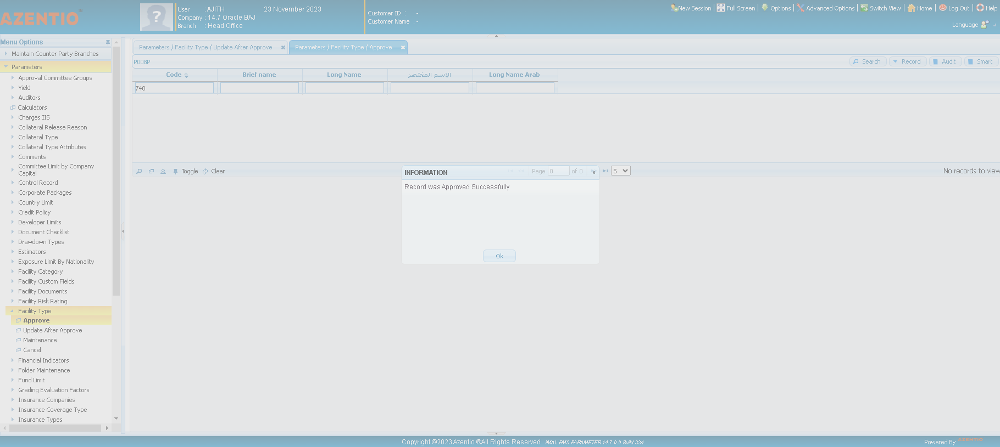
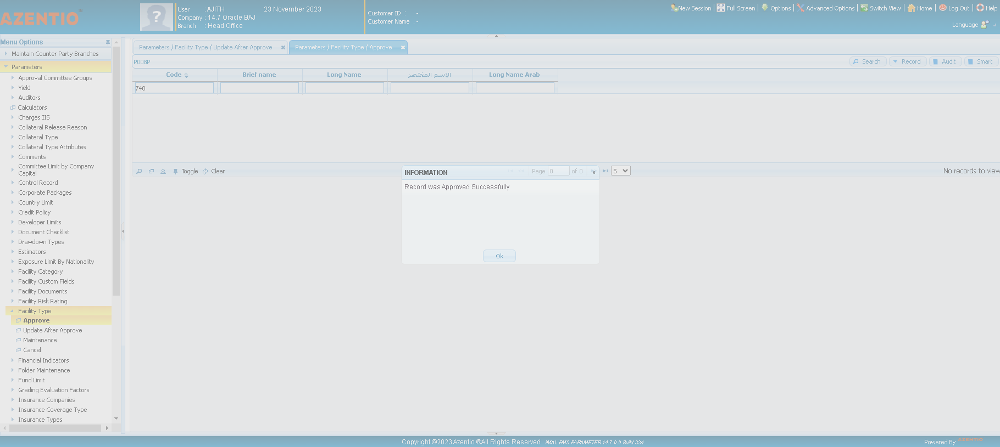

-
Testing the Functionalities of Facilies Management feature
11:08:31 AM / 34:26:637 Fail
Testing the Functionalities of Facilies Management feature
11.23.2023 11:08:31 11.23.2023 11:42:58 34:26:637 · #test-id=1PassBMOUPI180168 - Existing Facility Repayment plan not showing correct DataGiven navigate to FMS application and login with valid credentialsstepdefinitions.HooksClass.addScreenshot(io.cucumber.java.Scenario)screenshot And User_482 Click on REQUEST FOR FINANCIN under FMS applicationstepdefinitions.HooksClass.addScreenshot(io.cucumber.java.Scenario)screenshotAnd User_482 click the Request For Financing Sub Menu under REQUEST FOR FINANCINstepdefinitions.HooksClass.addScreenshot(io.cucumber.java.Scenario)screenshotAnd User_482 Click on Maintenance under Request For Financing Sub Menu in REQUEST FOR FINANCINstepdefinitions.HooksClass.addScreenshot(io.cucumber.java.Scenario)screenshotAnd User_482 click search icon in Maintenance screen Request for financingstepdefinitions.HooksClass.addScreenshot(io.cucumber.java.Scenario)screenshotAnd User_482 search Status In Maintenance under REQUEST FOR FINANCINstepdefinitions.HooksClass.addScreenshot(io.cucumber.java.Scenario)screenshotAnd User_482 select the searched status in Maintenance screen under REQUEST FOR FINANCINstepdefinitions.HooksClass.addScreenshot(io.cucumber.java.Scenario)screenshot
And User_482 Click on REQUEST FOR FINANCIN under FMS applicationstepdefinitions.HooksClass.addScreenshot(io.cucumber.java.Scenario)screenshotAnd User_482 click the Request For Financing Sub Menu under REQUEST FOR FINANCINstepdefinitions.HooksClass.addScreenshot(io.cucumber.java.Scenario)screenshotAnd User_482 Click on Maintenance under Request For Financing Sub Menu in REQUEST FOR FINANCINstepdefinitions.HooksClass.addScreenshot(io.cucumber.java.Scenario)screenshotAnd User_482 click search icon in Maintenance screen Request for financingstepdefinitions.HooksClass.addScreenshot(io.cucumber.java.Scenario)screenshotAnd User_482 search Status In Maintenance under REQUEST FOR FINANCINstepdefinitions.HooksClass.addScreenshot(io.cucumber.java.Scenario)screenshotAnd User_482 select the searched status in Maintenance screen under REQUEST FOR FINANCINstepdefinitions.HooksClass.addScreenshot(io.cucumber.java.Scenario)screenshot And User_482 click disbursement sublimit tab in draft record Maintenance screen under REQUEST FOR FINANCINstepdefinitions.HooksClass.addScreenshot(io.cucumber.java.Scenario)screenshot
And User_482 click disbursement sublimit tab in draft record Maintenance screen under REQUEST FOR FINANCINstepdefinitions.HooksClass.addScreenshot(io.cucumber.java.Scenario)screenshot And User_482 select product class record in draft record Maintenance screen under REQUEST FOR FINANCINstepdefinitions.HooksClass.addScreenshot(io.cucumber.java.Scenario)screenshotAnd User_482 click the repayment plan in draft record Maintenance screen under REQUEST FOR FINANCINstepdefinitions.HooksClass.addScreenshot(io.cucumber.java.Scenario)screenshotAnd User_482 enter the no of payments In Limit details pop up under REQUEST FOR FINANCINstepdefinitions.HooksClass.addScreenshot(io.cucumber.java.Scenario)screenshotAnd User_482 click create schedule option In Limit details pop up under REQUEST FOR FINANCINstepdefinitions.HooksClass.addScreenshot(io.cucumber.java.Scenario)screenshot
And User_482 select product class record in draft record Maintenance screen under REQUEST FOR FINANCINstepdefinitions.HooksClass.addScreenshot(io.cucumber.java.Scenario)screenshotAnd User_482 click the repayment plan in draft record Maintenance screen under REQUEST FOR FINANCINstepdefinitions.HooksClass.addScreenshot(io.cucumber.java.Scenario)screenshotAnd User_482 enter the no of payments In Limit details pop up under REQUEST FOR FINANCINstepdefinitions.HooksClass.addScreenshot(io.cucumber.java.Scenario)screenshotAnd User_482 click create schedule option In Limit details pop up under REQUEST FOR FINANCINstepdefinitions.HooksClass.addScreenshot(io.cucumber.java.Scenario)screenshot And User_482 Click on Ok button in Confirm Pop up Menustepdefinitions.HooksClass.addScreenshot(io.cucumber.java.Scenario)screenshot
And User_482 Click on Ok button in Confirm Pop up Menustepdefinitions.HooksClass.addScreenshot(io.cucumber.java.Scenario)screenshot And User_482 Validate the No of payments Generated in repayment planstepdefinitions.HooksClass.addScreenshot(io.cucumber.java.Scenario)screenshotFailTSR - MMBI170086 -Error at facility ScreenGiven navigate to FMS application and login with valid credentialsstepdefinitions.HooksClass.addScreenshot(io.cucumber.java.Scenario)screenshotAnd User_482 Update test data set id for AT_FM_010stepdefinitions.HooksClass.addScreenshot(io.cucumber.java.Scenario)screenshotAnd User_482 Click on WIFAK Application Main Menustepdefinitions.HooksClass.addScreenshot(io.cucumber.java.Scenario)screenshotAnd User_482 Click on WIFAK Application Sub Menustepdefinitions.HooksClass.addScreenshot(io.cucumber.java.Scenario)screenshotAnd User_482 click Facilities Management in WIFAK Applicationstepdefinitions.HooksClass.addScreenshot(io.cucumber.java.Scenario)screenshotAnd User_482 click approve submenu in Request for Financing under WIFAK Applicationstepdefinitions.HooksClass.addScreenshot(io.cucumber.java.Scenario)screenshotAnd User_482 search active status in approve level 1 under WIFAK Applicationstepdefinitions.HooksClass.addScreenshot(io.cucumber.java.Scenario)screenshotAnd User_482 select the first active record of facility record under WIFAK ApplicationStep skippedAnd User_482 click approve button in facility main information under WIFAK ApplicationStep skippedAnd User_482 Click on Ok button in Confirm Pop up MenuStep skippedAnd User_482 Validate the approved facility record in Facility management under WIFAK ApplicationStep skippedPassCheck the flag in facility type to get facilities in Facility ManagementGiven navigate to FMS param application and login with valid credentialsstepdefinitions.HooksClass.addScreenshot(io.cucumber.java.Scenario)screenshotAnd User_482 click parameter Menustepdefinitions.HooksClass.addScreenshot(io.cucumber.java.Scenario)screenshot
And User_482 Validate the No of payments Generated in repayment planstepdefinitions.HooksClass.addScreenshot(io.cucumber.java.Scenario)screenshotFailTSR - MMBI170086 -Error at facility ScreenGiven navigate to FMS application and login with valid credentialsstepdefinitions.HooksClass.addScreenshot(io.cucumber.java.Scenario)screenshotAnd User_482 Update test data set id for AT_FM_010stepdefinitions.HooksClass.addScreenshot(io.cucumber.java.Scenario)screenshotAnd User_482 Click on WIFAK Application Main Menustepdefinitions.HooksClass.addScreenshot(io.cucumber.java.Scenario)screenshotAnd User_482 Click on WIFAK Application Sub Menustepdefinitions.HooksClass.addScreenshot(io.cucumber.java.Scenario)screenshotAnd User_482 click Facilities Management in WIFAK Applicationstepdefinitions.HooksClass.addScreenshot(io.cucumber.java.Scenario)screenshotAnd User_482 click approve submenu in Request for Financing under WIFAK Applicationstepdefinitions.HooksClass.addScreenshot(io.cucumber.java.Scenario)screenshotAnd User_482 search active status in approve level 1 under WIFAK Applicationstepdefinitions.HooksClass.addScreenshot(io.cucumber.java.Scenario)screenshotAnd User_482 select the first active record of facility record under WIFAK ApplicationStep skippedAnd User_482 click approve button in facility main information under WIFAK ApplicationStep skippedAnd User_482 Click on Ok button in Confirm Pop up MenuStep skippedAnd User_482 Validate the approved facility record in Facility management under WIFAK ApplicationStep skippedPassCheck the flag in facility type to get facilities in Facility ManagementGiven navigate to FMS param application and login with valid credentialsstepdefinitions.HooksClass.addScreenshot(io.cucumber.java.Scenario)screenshotAnd User_482 click parameter Menustepdefinitions.HooksClass.addScreenshot(io.cucumber.java.Scenario)screenshot And User_482 click Facility Typestepdefinitions.HooksClass.addScreenshot(io.cucumber.java.Scenario)screenshot
And User_482 click Facility Typestepdefinitions.HooksClass.addScreenshot(io.cucumber.java.Scenario)screenshot And User_482 click update after approve screen in Facility typestepdefinitions.HooksClass.addScreenshot(io.cucumber.java.Scenario)screenshot
And User_482 click update after approve screen in Facility typestepdefinitions.HooksClass.addScreenshot(io.cucumber.java.Scenario)screenshot And User_482 Search facility type code in Update after approve screen Facility typestepdefinitions.HooksClass.addScreenshot(io.cucumber.java.Scenario)screenshot
And User_482 Search facility type code in Update after approve screen Facility typestepdefinitions.HooksClass.addScreenshot(io.cucumber.java.Scenario)screenshot And User_482 select the searched facility type in Update after approve screen Facility typestepdefinitions.HooksClass.addScreenshot(io.cucumber.java.Scenario)screenshotAnd User_482 click facility details tab in searched record Update after approve screen Facility typestepdefinitions.HooksClass.addScreenshot(io.cucumber.java.Scenario)screenshot
And User_482 select the searched facility type in Update after approve screen Facility typestepdefinitions.HooksClass.addScreenshot(io.cucumber.java.Scenario)screenshotAnd User_482 click facility details tab in searched record Update after approve screen Facility typestepdefinitions.HooksClass.addScreenshot(io.cucumber.java.Scenario)screenshot And User_482 click STP Facility Requirementsstepdefinitions.HooksClass.addScreenshot(io.cucumber.java.Scenario)screenshotAnd User_482 check Committee Approval CheckBoxstepdefinitions.HooksClass.addScreenshot(io.cucumber.java.Scenario)screenshot
And User_482 click STP Facility Requirementsstepdefinitions.HooksClass.addScreenshot(io.cucumber.java.Scenario)screenshotAnd User_482 check Committee Approval CheckBoxstepdefinitions.HooksClass.addScreenshot(io.cucumber.java.Scenario)screenshot And User_482 check Credit Review CheckBoxstepdefinitions.HooksClass.addScreenshot(io.cucumber.java.Scenario)screenshot
And User_482 check Credit Review CheckBoxstepdefinitions.HooksClass.addScreenshot(io.cucumber.java.Scenario)screenshot And User_482 check Issue Facility Offer CheckBoxstepdefinitions.HooksClass.addScreenshot(io.cucumber.java.Scenario)screenshotAnd User_482 check Document Validation CheckBoxstepdefinitions.HooksClass.addScreenshot(io.cucumber.java.Scenario)screenshot
And User_482 check Issue Facility Offer CheckBoxstepdefinitions.HooksClass.addScreenshot(io.cucumber.java.Scenario)screenshotAnd User_482 check Document Validation CheckBoxstepdefinitions.HooksClass.addScreenshot(io.cucumber.java.Scenario)screenshot And User_482 check Final Approval CheckBoxstepdefinitions.HooksClass.addScreenshot(io.cucumber.java.Scenario)screenshot
And User_482 check Final Approval CheckBoxstepdefinitions.HooksClass.addScreenshot(io.cucumber.java.Scenario)screenshot And User_482 check Create Active Facility If Within Limits CheckBoxstepdefinitions.HooksClass.addScreenshot(io.cucumber.java.Scenario)screenshot
And User_482 check Create Active Facility If Within Limits CheckBoxstepdefinitions.HooksClass.addScreenshot(io.cucumber.java.Scenario)screenshot And User_482 check Automatically Approve Facility If Within Limits CheckBoxstepdefinitions.HooksClass.addScreenshot(io.cucumber.java.Scenario)screenshotAnd User_482 click update button in Update after approve screen Facility typestepdefinitions.HooksClass.addScreenshot(io.cucumber.java.Scenario)screenshotAnd User_482 Click on Ok button in Confirm Pop up Menustepdefinitions.HooksClass.addScreenshot(io.cucumber.java.Scenario)screenshotAnd User_482 Click on Ok button in Success Pop up Menustepdefinitions.HooksClass.addScreenshot(io.cucumber.java.Scenario)screenshotAnd User_482 click approve screen in Facility typestepdefinitions.HooksClass.addScreenshot(io.cucumber.java.Scenario)screenshotAnd User_482 search code in approve screen Facility typestepdefinitions.HooksClass.addScreenshot(io.cucumber.java.Scenario)screenshot
And User_482 check Automatically Approve Facility If Within Limits CheckBoxstepdefinitions.HooksClass.addScreenshot(io.cucumber.java.Scenario)screenshotAnd User_482 click update button in Update after approve screen Facility typestepdefinitions.HooksClass.addScreenshot(io.cucumber.java.Scenario)screenshotAnd User_482 Click on Ok button in Confirm Pop up Menustepdefinitions.HooksClass.addScreenshot(io.cucumber.java.Scenario)screenshotAnd User_482 Click on Ok button in Success Pop up Menustepdefinitions.HooksClass.addScreenshot(io.cucumber.java.Scenario)screenshotAnd User_482 click approve screen in Facility typestepdefinitions.HooksClass.addScreenshot(io.cucumber.java.Scenario)screenshotAnd User_482 search code in approve screen Facility typestepdefinitions.HooksClass.addScreenshot(io.cucumber.java.Scenario)screenshot And User_482 select searched code in approve screen Facility typestepdefinitions.HooksClass.addScreenshot(io.cucumber.java.Scenario)screenshotAnd User_482 click approve button in approve screen Facility typestepdefinitions.HooksClass.addScreenshot(io.cucumber.java.Scenario)screenshotAnd User_482 Click on Ok button in Confirm Pop up Menustepdefinitions.HooksClass.addScreenshot(io.cucumber.java.Scenario)screenshotAnd User_482 Click on Ok button in Success Pop up Menustepdefinitions.HooksClass.addScreenshot(io.cucumber.java.Scenario)screenshotFailCheck all the fals in facility type under fms paramGiven navigate to FMS param application and login with valid credentialsstepdefinitions.HooksClass.addScreenshot(io.cucumber.java.Scenario)screenshot
And User_482 select searched code in approve screen Facility typestepdefinitions.HooksClass.addScreenshot(io.cucumber.java.Scenario)screenshotAnd User_482 click approve button in approve screen Facility typestepdefinitions.HooksClass.addScreenshot(io.cucumber.java.Scenario)screenshotAnd User_482 Click on Ok button in Confirm Pop up Menustepdefinitions.HooksClass.addScreenshot(io.cucumber.java.Scenario)screenshotAnd User_482 Click on Ok button in Success Pop up Menustepdefinitions.HooksClass.addScreenshot(io.cucumber.java.Scenario)screenshotFailCheck all the fals in facility type under fms paramGiven navigate to FMS param application and login with valid credentialsstepdefinitions.HooksClass.addScreenshot(io.cucumber.java.Scenario)screenshot And User_482 click parameter Menustepdefinitions.HooksClass.addScreenshot(io.cucumber.java.Scenario)screenshot
And User_482 click parameter Menustepdefinitions.HooksClass.addScreenshot(io.cucumber.java.Scenario)screenshot And User_482 click Facility Typestepdefinitions.HooksClass.addScreenshot(io.cucumber.java.Scenario)screenshot
And User_482 click Facility Typestepdefinitions.HooksClass.addScreenshot(io.cucumber.java.Scenario)screenshot And User_482 click update after approve screen in Facility typestepdefinitions.HooksClass.addScreenshot(io.cucumber.java.Scenario)screenshotAnd User_482 Search facility type code in Update after approve screen Facility typestepdefinitions.HooksClass.addScreenshot(io.cucumber.java.Scenario)screenshot
And User_482 click update after approve screen in Facility typestepdefinitions.HooksClass.addScreenshot(io.cucumber.java.Scenario)screenshotAnd User_482 Search facility type code in Update after approve screen Facility typestepdefinitions.HooksClass.addScreenshot(io.cucumber.java.Scenario)screenshot And User_482 select the searched facility type in Update after approve screen Facility typestepdefinitions.HooksClass.addScreenshot(io.cucumber.java.Scenario)screenshotAnd User_482 click facility details tab in searched record Update after approve screen Facility typestepdefinitions.HooksClass.addScreenshot(io.cucumber.java.Scenario)screenshot
And User_482 select the searched facility type in Update after approve screen Facility typestepdefinitions.HooksClass.addScreenshot(io.cucumber.java.Scenario)screenshotAnd User_482 click facility details tab in searched record Update after approve screen Facility typestepdefinitions.HooksClass.addScreenshot(io.cucumber.java.Scenario)screenshot And User_482 click STP Facility Requirementsstepdefinitions.HooksClass.addScreenshot(io.cucumber.java.Scenario)screenshotAnd User_482 check Customer Grading Checkboxstepdefinitions.HooksClass.addScreenshot(io.cucumber.java.Scenario)screenshot
And User_482 click STP Facility Requirementsstepdefinitions.HooksClass.addScreenshot(io.cucumber.java.Scenario)screenshotAnd User_482 check Customer Grading Checkboxstepdefinitions.HooksClass.addScreenshot(io.cucumber.java.Scenario)screenshot And User_482 Check Overwrite GradingStep skippedAnd User_482 check Committee Approval CheckBoxStep skippedAnd User_482 check Credit authorizationStep skippedAnd User_482 check Credit Review CheckBoxStep skippedAnd User_482 check Issue Facility Offer CheckBoxStep skippedAnd User_482 check Client Response CheckBoxStep skippedAnd User_482 check Document Validation CheckBoxStep skippedAnd User_482 check Final Approval CheckBoxStep skippedAnd User_482 check Create Active Facility If Within Limits CheckBoxStep skippedAnd User_482 check Automatically Approve Facility If Within Limits CheckBoxStep skippedAnd User_482 click update button in Update after approve screen Facility typeStep skippedAnd User_482 Click on Ok button in Confirm Pop up MenuStep skippedAnd User_482 Click on Ok button in Success Pop up MenuStep skippedAnd User_482 click approve screen in Facility typeStep skippedAnd User_482 search code in approve screen Facility typeStep skippedAnd User_482 select searched code in approve screen Facility typeStep skippedAnd User_482 click approve button in approve screen Facility typeStep skippedAnd User_482 Click on Ok button in Confirm Pop up MenuStep skippedAnd User_482 Click on Ok button in Success Pop up MenuStep skippedFailSystem automatically approved all the level till facility creationGiven navigate to FMS application and login with valid credentialsstepdefinitions.HooksClass.addScreenshot(io.cucumber.java.Scenario)screenshot
And User_482 Check Overwrite GradingStep skippedAnd User_482 check Committee Approval CheckBoxStep skippedAnd User_482 check Credit authorizationStep skippedAnd User_482 check Credit Review CheckBoxStep skippedAnd User_482 check Issue Facility Offer CheckBoxStep skippedAnd User_482 check Client Response CheckBoxStep skippedAnd User_482 check Document Validation CheckBoxStep skippedAnd User_482 check Final Approval CheckBoxStep skippedAnd User_482 check Create Active Facility If Within Limits CheckBoxStep skippedAnd User_482 check Automatically Approve Facility If Within Limits CheckBoxStep skippedAnd User_482 click update button in Update after approve screen Facility typeStep skippedAnd User_482 Click on Ok button in Confirm Pop up MenuStep skippedAnd User_482 Click on Ok button in Success Pop up MenuStep skippedAnd User_482 click approve screen in Facility typeStep skippedAnd User_482 search code in approve screen Facility typeStep skippedAnd User_482 select searched code in approve screen Facility typeStep skippedAnd User_482 click approve button in approve screen Facility typeStep skippedAnd User_482 Click on Ok button in Confirm Pop up MenuStep skippedAnd User_482 Click on Ok button in Success Pop up MenuStep skippedFailSystem automatically approved all the level till facility creationGiven navigate to FMS application and login with valid credentialsstepdefinitions.HooksClass.addScreenshot(io.cucumber.java.Scenario)screenshot And User_482 click Technical detailsstepdefinitions.HooksClass.addScreenshot(io.cucumber.java.Scenario)screenshotAnd User_482 click clear cachesstepdefinitions.HooksClass.addScreenshot(io.cucumber.java.Scenario)screenshotAnd User_482 Click on Ok button in Success Pop up Menustepdefinitions.HooksClass.addScreenshot(io.cucumber.java.Scenario)screenshotAnd User_482 Click on WIFAK Application Main Menustepdefinitions.HooksClass.addScreenshot(io.cucumber.java.Scenario)screenshot
And User_482 click Technical detailsstepdefinitions.HooksClass.addScreenshot(io.cucumber.java.Scenario)screenshotAnd User_482 click clear cachesstepdefinitions.HooksClass.addScreenshot(io.cucumber.java.Scenario)screenshotAnd User_482 Click on Ok button in Success Pop up Menustepdefinitions.HooksClass.addScreenshot(io.cucumber.java.Scenario)screenshotAnd User_482 Click on WIFAK Application Main Menustepdefinitions.HooksClass.addScreenshot(io.cucumber.java.Scenario)screenshot And User_482 Click on WIFAK Application Sub Menustepdefinitions.HooksClass.addScreenshot(io.cucumber.java.Scenario)screenshot
And User_482 Click on WIFAK Application Sub Menustepdefinitions.HooksClass.addScreenshot(io.cucumber.java.Scenario)screenshot And User_482 Click Application for financial facilitiesstepdefinitions.HooksClass.addScreenshot(io.cucumber.java.Scenario)screenshotAnd User_482 Click Maintenance screen in WIFAK Application sub menustepdefinitions.HooksClass.addScreenshot(io.cucumber.java.Scenario)screenshotAnd User_482 update test data set for AT_FM_061stepdefinitions.HooksClass.addScreenshot(io.cucumber.java.Scenario)screenshot
And User_482 Click Application for financial facilitiesstepdefinitions.HooksClass.addScreenshot(io.cucumber.java.Scenario)screenshotAnd User_482 Click Maintenance screen in WIFAK Application sub menustepdefinitions.HooksClass.addScreenshot(io.cucumber.java.Scenario)screenshotAnd User_482 update test data set for AT_FM_061stepdefinitions.HooksClass.addScreenshot(io.cucumber.java.Scenario)screenshot And User_482 Select Application For field in Maintenace Screen under WIRAK Applicationstepdefinitions.HooksClass.addScreenshot(io.cucumber.java.Scenario)screenshot
And User_482 Select Application For field in Maintenace Screen under WIRAK Applicationstepdefinitions.HooksClass.addScreenshot(io.cucumber.java.Scenario)screenshot And User_482 enter the CIF No in main info tab under WIRAK ApplicationStep skippedAnd User_482 enter the facility type in main info tab under WIRAK ApplicationStep skippedAnd User_482 enter the country of financing in main info tab under WIRAK ApplicationStep skippedAnd User_482 enter facility rating in main info tab under WIRAK ApplicationStep skippedAnd User_482 clicks on the additional details tab under WIRAK ApplicationStep skippedAnd User_482 Enter total value under additional details tab in WIFAK ApplicationStep skippedAnd User_482 Enter offer Expiration in Additional details under WIFAK ApplicationStep skippedAnd User_482 click Limit Details tab in WIFAK ApplicationStep skippedAnd User_482 click add icon in limit details under WIFAK ApplicationStep skippedAnd User_482 select the product class in limit details under WIFAK ApplicationStep skippedAnd User_482 check clean checkbox options in limit details under WIFAK ApplicationStep skippedAnd User_482 click add icon in limit details popup under WIFAK ApplicationStep skippedAnd User_482 click document details tab under WIFAK ApplicationStep skippedAnd User_482 enter solicitor name to select from look up in document details under WIFAK ApplicationStep skippedAnd User_482 enter Estimator name to select from look up in document details under WIFAK ApplicationStep skippedAnd User_482 click Maininformation tab in WIFAK ApplicationStep skippedAnd User_482 click save button in Main Info tab under WIFAK ApplicationStep skippedAnd User_482 Click on Ok button in Confirm Pop up MenuStep skippedAnd User_482 Get the Code in Success Pop up Menu under WIFAK ApplicationStep skippedAnd User_482 Click on Ok button in Success Pop up MenuStep skippedAnd User_482 click Validate button in Main Info tab under WIFAK ApplicationStep skippedAnd User_482 Click on Ok button in Confirm Pop up MenuStep skippedAnd User_482 Click on Ok button in Confirm Pop up MenuStep skippedAnd User_482 Click on Ok button in Success Pop up MenuStep skippedAnd User_482 update test data set for AT_FM_061Step skippedAnd User_482 Click Approve Level 1 screen in application for financial facilities under WIFAK ApplicationStep skippedAnd User_482 Search code in Approve Level 1 screen in Application for financial facilitiesStep skippedAnd User_482 Select searched record in Approve level 1 screen Application for financial facilitiesStep skippedAnd User_482 Select Decision in Approve level 1 under WIFAK ApplicationStep skippedAnd User_482 click submit button in approve level 1 under WIFAK ApplicationStep skippedAnd User_482 Click on Ok button in Confirm Pop up MenuStep skippedAnd User_482 Click on Ok button in Success Pop up MenuStep skippedAnd User_482 Click Approve Level 2 screen in application for financial facilities under WIFAK ApplicationStep skippedAnd User_482 Search code in Approve Level 2 screen in Application for financial facilitiesStep skippedAnd User_482 Select searched record in Approve level 2 screen Application for financial facilitiesStep skippedAnd User_482 Select Decision in Approve level 2 under WIFAK ApplicationStep skippedAnd User_482 click submit button in approve level 2 under WIFAK ApplicationStep skippedAnd User_482 Click on Ok button in Confirm Pop up MenuStep skippedAnd User_482 Click on Ok button in Success Pop up MenuStep skippedAnd User_482 Click Approve Level 3 screen in application for financial facilities under WIFAK ApplicationStep skippedAnd User_482 Search code in Approve Level 3 screen in Application for financial facilitiesStep skippedAnd User_482 Select searched record in Approve level 3 screen Application for financial facilitiesStep skippedAnd User_482 Select Decision in Approve level 3 under WIFAK ApplicationStep skippedAnd User_482 click submit button in approve level 3 under WIFAK ApplicationStep skippedAnd User_482 Click on Ok button in Confirm Pop up MenuStep skippedAnd User_482 Click on Ok button in Success Pop up MenuStep skippedAnd User_482 close Maintenance screen WIFAK ApplicationStep skippedAnd User_482 Click Maintenance screen in WIFAK Application sub menuStep skippedAnd User_482 click search icon in Maintenance screen under WIFAK ApplicationStep skippedAnd User_482 Search code in Maintenance screen in Application for financial facilitiesStep skippedAnd User_482 Validate Final approval of facility application under WIFAK ApplicationStep skippedPassUncheck Enable alert in fsm parameterGiven navigate to FMS param application and login with valid credentialsstepdefinitions.HooksClass.addScreenshot(io.cucumber.java.Scenario)screenshot
And User_482 enter the CIF No in main info tab under WIRAK ApplicationStep skippedAnd User_482 enter the facility type in main info tab under WIRAK ApplicationStep skippedAnd User_482 enter the country of financing in main info tab under WIRAK ApplicationStep skippedAnd User_482 enter facility rating in main info tab under WIRAK ApplicationStep skippedAnd User_482 clicks on the additional details tab under WIRAK ApplicationStep skippedAnd User_482 Enter total value under additional details tab in WIFAK ApplicationStep skippedAnd User_482 Enter offer Expiration in Additional details under WIFAK ApplicationStep skippedAnd User_482 click Limit Details tab in WIFAK ApplicationStep skippedAnd User_482 click add icon in limit details under WIFAK ApplicationStep skippedAnd User_482 select the product class in limit details under WIFAK ApplicationStep skippedAnd User_482 check clean checkbox options in limit details under WIFAK ApplicationStep skippedAnd User_482 click add icon in limit details popup under WIFAK ApplicationStep skippedAnd User_482 click document details tab under WIFAK ApplicationStep skippedAnd User_482 enter solicitor name to select from look up in document details under WIFAK ApplicationStep skippedAnd User_482 enter Estimator name to select from look up in document details under WIFAK ApplicationStep skippedAnd User_482 click Maininformation tab in WIFAK ApplicationStep skippedAnd User_482 click save button in Main Info tab under WIFAK ApplicationStep skippedAnd User_482 Click on Ok button in Confirm Pop up MenuStep skippedAnd User_482 Get the Code in Success Pop up Menu under WIFAK ApplicationStep skippedAnd User_482 Click on Ok button in Success Pop up MenuStep skippedAnd User_482 click Validate button in Main Info tab under WIFAK ApplicationStep skippedAnd User_482 Click on Ok button in Confirm Pop up MenuStep skippedAnd User_482 Click on Ok button in Confirm Pop up MenuStep skippedAnd User_482 Click on Ok button in Success Pop up MenuStep skippedAnd User_482 update test data set for AT_FM_061Step skippedAnd User_482 Click Approve Level 1 screen in application for financial facilities under WIFAK ApplicationStep skippedAnd User_482 Search code in Approve Level 1 screen in Application for financial facilitiesStep skippedAnd User_482 Select searched record in Approve level 1 screen Application for financial facilitiesStep skippedAnd User_482 Select Decision in Approve level 1 under WIFAK ApplicationStep skippedAnd User_482 click submit button in approve level 1 under WIFAK ApplicationStep skippedAnd User_482 Click on Ok button in Confirm Pop up MenuStep skippedAnd User_482 Click on Ok button in Success Pop up MenuStep skippedAnd User_482 Click Approve Level 2 screen in application for financial facilities under WIFAK ApplicationStep skippedAnd User_482 Search code in Approve Level 2 screen in Application for financial facilitiesStep skippedAnd User_482 Select searched record in Approve level 2 screen Application for financial facilitiesStep skippedAnd User_482 Select Decision in Approve level 2 under WIFAK ApplicationStep skippedAnd User_482 click submit button in approve level 2 under WIFAK ApplicationStep skippedAnd User_482 Click on Ok button in Confirm Pop up MenuStep skippedAnd User_482 Click on Ok button in Success Pop up MenuStep skippedAnd User_482 Click Approve Level 3 screen in application for financial facilities under WIFAK ApplicationStep skippedAnd User_482 Search code in Approve Level 3 screen in Application for financial facilitiesStep skippedAnd User_482 Select searched record in Approve level 3 screen Application for financial facilitiesStep skippedAnd User_482 Select Decision in Approve level 3 under WIFAK ApplicationStep skippedAnd User_482 click submit button in approve level 3 under WIFAK ApplicationStep skippedAnd User_482 Click on Ok button in Confirm Pop up MenuStep skippedAnd User_482 Click on Ok button in Success Pop up MenuStep skippedAnd User_482 close Maintenance screen WIFAK ApplicationStep skippedAnd User_482 Click Maintenance screen in WIFAK Application sub menuStep skippedAnd User_482 click search icon in Maintenance screen under WIFAK ApplicationStep skippedAnd User_482 Search code in Maintenance screen in Application for financial facilitiesStep skippedAnd User_482 Validate Final approval of facility application under WIFAK ApplicationStep skippedPassUncheck Enable alert in fsm parameterGiven navigate to FMS param application and login with valid credentialsstepdefinitions.HooksClass.addScreenshot(io.cucumber.java.Scenario)screenshot And User_482 click parameter Menustepdefinitions.HooksClass.addScreenshot(io.cucumber.java.Scenario)screenshot
And User_482 click parameter Menustepdefinitions.HooksClass.addScreenshot(io.cucumber.java.Scenario)screenshot And User_482 click Control record Sub Menustepdefinitions.HooksClass.addScreenshot(io.cucumber.java.Scenario)screenshotAnd User_482 click Update After Approve in control recordstepdefinitions.HooksClass.addScreenshot(io.cucumber.java.Scenario)screenshotAnd User_482 Uncheck the Enable Alerts check boxstepdefinitions.HooksClass.addScreenshot(io.cucumber.java.Scenario)screenshotAnd User_482 click update button in Update after approvestepdefinitions.HooksClass.addScreenshot(io.cucumber.java.Scenario)screenshotAnd User_482 Click on Ok button in Confirm Pop up Menustepdefinitions.HooksClass.addScreenshot(io.cucumber.java.Scenario)screenshotAnd User_482 Click on Ok button in Success Pop up Menustepdefinitions.HooksClass.addScreenshot(io.cucumber.java.Scenario)screenshotAnd User_482 click approve screen in Control recordsstepdefinitions.HooksClass.addScreenshot(io.cucumber.java.Scenario)screenshotAnd User_482 click approve button in aaprove screenstepdefinitions.HooksClass.addScreenshot(io.cucumber.java.Scenario)screenshotAnd User_482 Click on Ok button in Confirm Pop up Menustepdefinitions.HooksClass.addScreenshot(io.cucumber.java.Scenario)screenshot
And User_482 click Control record Sub Menustepdefinitions.HooksClass.addScreenshot(io.cucumber.java.Scenario)screenshotAnd User_482 click Update After Approve in control recordstepdefinitions.HooksClass.addScreenshot(io.cucumber.java.Scenario)screenshotAnd User_482 Uncheck the Enable Alerts check boxstepdefinitions.HooksClass.addScreenshot(io.cucumber.java.Scenario)screenshotAnd User_482 click update button in Update after approvestepdefinitions.HooksClass.addScreenshot(io.cucumber.java.Scenario)screenshotAnd User_482 Click on Ok button in Confirm Pop up Menustepdefinitions.HooksClass.addScreenshot(io.cucumber.java.Scenario)screenshotAnd User_482 Click on Ok button in Success Pop up Menustepdefinitions.HooksClass.addScreenshot(io.cucumber.java.Scenario)screenshotAnd User_482 click approve screen in Control recordsstepdefinitions.HooksClass.addScreenshot(io.cucumber.java.Scenario)screenshotAnd User_482 click approve button in aaprove screenstepdefinitions.HooksClass.addScreenshot(io.cucumber.java.Scenario)screenshotAnd User_482 Click on Ok button in Confirm Pop up Menustepdefinitions.HooksClass.addScreenshot(io.cucumber.java.Scenario)screenshot And User_482 Click on Ok button in Success Pop up Menustepdefinitions.HooksClass.addScreenshot(io.cucumber.java.Scenario)screenshotPassCheck the flag in facility type to get facilities in Facility ManagementGiven navigate to FMS param application and login with valid credentialsstepdefinitions.HooksClass.addScreenshot(io.cucumber.java.Scenario)screenshot
And User_482 Click on Ok button in Success Pop up Menustepdefinitions.HooksClass.addScreenshot(io.cucumber.java.Scenario)screenshotPassCheck the flag in facility type to get facilities in Facility ManagementGiven navigate to FMS param application and login with valid credentialsstepdefinitions.HooksClass.addScreenshot(io.cucumber.java.Scenario)screenshot And User_482 click parameter Menustepdefinitions.HooksClass.addScreenshot(io.cucumber.java.Scenario)screenshotAnd User_482 click Facility Typestepdefinitions.HooksClass.addScreenshot(io.cucumber.java.Scenario)screenshotAnd User_482 click update after approve screen in Facility typestepdefinitions.HooksClass.addScreenshot(io.cucumber.java.Scenario)screenshot
And User_482 click parameter Menustepdefinitions.HooksClass.addScreenshot(io.cucumber.java.Scenario)screenshotAnd User_482 click Facility Typestepdefinitions.HooksClass.addScreenshot(io.cucumber.java.Scenario)screenshotAnd User_482 click update after approve screen in Facility typestepdefinitions.HooksClass.addScreenshot(io.cucumber.java.Scenario)screenshot And User_482 Search facility type code in Update after approve screen Facility typestepdefinitions.HooksClass.addScreenshot(io.cucumber.java.Scenario)screenshot
And User_482 Search facility type code in Update after approve screen Facility typestepdefinitions.HooksClass.addScreenshot(io.cucumber.java.Scenario)screenshot And User_482 select the searched facility type in Update after approve screen Facility typestepdefinitions.HooksClass.addScreenshot(io.cucumber.java.Scenario)screenshotAnd User_482 click facility details tab in searched record Update after approve screen Facility typestepdefinitions.HooksClass.addScreenshot(io.cucumber.java.Scenario)screenshotAnd User_482 click STP Facility Requirementsstepdefinitions.HooksClass.addScreenshot(io.cucumber.java.Scenario)screenshotAnd User_482 check Committee Approval CheckBoxstepdefinitions.HooksClass.addScreenshot(io.cucumber.java.Scenario)screenshot
And User_482 select the searched facility type in Update after approve screen Facility typestepdefinitions.HooksClass.addScreenshot(io.cucumber.java.Scenario)screenshotAnd User_482 click facility details tab in searched record Update after approve screen Facility typestepdefinitions.HooksClass.addScreenshot(io.cucumber.java.Scenario)screenshotAnd User_482 click STP Facility Requirementsstepdefinitions.HooksClass.addScreenshot(io.cucumber.java.Scenario)screenshotAnd User_482 check Committee Approval CheckBoxstepdefinitions.HooksClass.addScreenshot(io.cucumber.java.Scenario)screenshot And User_482 check Credit Review CheckBoxstepdefinitions.HooksClass.addScreenshot(io.cucumber.java.Scenario)screenshot
And User_482 check Credit Review CheckBoxstepdefinitions.HooksClass.addScreenshot(io.cucumber.java.Scenario)screenshot And User_482 check Issue Facility Offer CheckBoxstepdefinitions.HooksClass.addScreenshot(io.cucumber.java.Scenario)screenshot
And User_482 check Issue Facility Offer CheckBoxstepdefinitions.HooksClass.addScreenshot(io.cucumber.java.Scenario)screenshot And User_482 check Document Validation CheckBoxstepdefinitions.HooksClass.addScreenshot(io.cucumber.java.Scenario)screenshotAnd User_482 check Final Approval CheckBoxstepdefinitions.HooksClass.addScreenshot(io.cucumber.java.Scenario)screenshot
And User_482 check Document Validation CheckBoxstepdefinitions.HooksClass.addScreenshot(io.cucumber.java.Scenario)screenshotAnd User_482 check Final Approval CheckBoxstepdefinitions.HooksClass.addScreenshot(io.cucumber.java.Scenario)screenshot And User_482 check Create Active Facility If Within Limits CheckBoxstepdefinitions.HooksClass.addScreenshot(io.cucumber.java.Scenario)screenshot
And User_482 check Create Active Facility If Within Limits CheckBoxstepdefinitions.HooksClass.addScreenshot(io.cucumber.java.Scenario)screenshot And User_482 uncheck Automatically Approve Facility If Within Limits CheckBoxstepdefinitions.HooksClass.addScreenshot(io.cucumber.java.Scenario)screenshotAnd User_482 click update button in Update after approve screen Facility typestepdefinitions.HooksClass.addScreenshot(io.cucumber.java.Scenario)screenshotAnd User_482 Click on Ok button in Confirm Pop up Menustepdefinitions.HooksClass.addScreenshot(io.cucumber.java.Scenario)screenshotAnd User_482 Click on Ok button in Success Pop up Menustepdefinitions.HooksClass.addScreenshot(io.cucumber.java.Scenario)screenshot
And User_482 uncheck Automatically Approve Facility If Within Limits CheckBoxstepdefinitions.HooksClass.addScreenshot(io.cucumber.java.Scenario)screenshotAnd User_482 click update button in Update after approve screen Facility typestepdefinitions.HooksClass.addScreenshot(io.cucumber.java.Scenario)screenshotAnd User_482 Click on Ok button in Confirm Pop up Menustepdefinitions.HooksClass.addScreenshot(io.cucumber.java.Scenario)screenshotAnd User_482 Click on Ok button in Success Pop up Menustepdefinitions.HooksClass.addScreenshot(io.cucumber.java.Scenario)screenshot And User_482 click approve screen in Facility typestepdefinitions.HooksClass.addScreenshot(io.cucumber.java.Scenario)screenshotAnd User_482 search code in approve screen Facility typestepdefinitions.HooksClass.addScreenshot(io.cucumber.java.Scenario)screenshotAnd User_482 select searched code in approve screen Facility typestepdefinitions.HooksClass.addScreenshot(io.cucumber.java.Scenario)screenshotAnd User_482 click approve button in approve screen Facility typestepdefinitions.HooksClass.addScreenshot(io.cucumber.java.Scenario)screenshotAnd User_482 Click on Ok button in Confirm Pop up Menustepdefinitions.HooksClass.addScreenshot(io.cucumber.java.Scenario)screenshotAnd User_482 Click on Ok button in Success Pop up Menustepdefinitions.HooksClass.addScreenshot(io.cucumber.java.Scenario)screenshotFailClear caches in Fms applicationGiven navigate to FMS application and login with valid credentialsstepdefinitions.HooksClass.addScreenshot(io.cucumber.java.Scenario)screenshot
And User_482 click approve screen in Facility typestepdefinitions.HooksClass.addScreenshot(io.cucumber.java.Scenario)screenshotAnd User_482 search code in approve screen Facility typestepdefinitions.HooksClass.addScreenshot(io.cucumber.java.Scenario)screenshotAnd User_482 select searched code in approve screen Facility typestepdefinitions.HooksClass.addScreenshot(io.cucumber.java.Scenario)screenshotAnd User_482 click approve button in approve screen Facility typestepdefinitions.HooksClass.addScreenshot(io.cucumber.java.Scenario)screenshotAnd User_482 Click on Ok button in Confirm Pop up Menustepdefinitions.HooksClass.addScreenshot(io.cucumber.java.Scenario)screenshotAnd User_482 Click on Ok button in Success Pop up Menustepdefinitions.HooksClass.addScreenshot(io.cucumber.java.Scenario)screenshotFailClear caches in Fms applicationGiven navigate to FMS application and login with valid credentialsstepdefinitions.HooksClass.addScreenshot(io.cucumber.java.Scenario)screenshot And User_482 click Technical detailsstepdefinitions.HooksClass.addScreenshot(io.cucumber.java.Scenario)screenshotAnd User_482 click clear cachesstepdefinitions.HooksClass.addScreenshot(io.cucumber.java.Scenario)screenshotAnd User_482 Click on Ok button in Success Pop up Menustepdefinitions.HooksClass.addScreenshot(io.cucumber.java.Scenario)screenshotAnd User_482 Click on WIFAK Application Main Menustepdefinitions.HooksClass.addScreenshot(io.cucumber.java.Scenario)screenshotAnd User_482 Click on WIFAK Application Sub Menustepdefinitions.HooksClass.addScreenshot(io.cucumber.java.Scenario)screenshot
And User_482 click Technical detailsstepdefinitions.HooksClass.addScreenshot(io.cucumber.java.Scenario)screenshotAnd User_482 click clear cachesstepdefinitions.HooksClass.addScreenshot(io.cucumber.java.Scenario)screenshotAnd User_482 Click on Ok button in Success Pop up Menustepdefinitions.HooksClass.addScreenshot(io.cucumber.java.Scenario)screenshotAnd User_482 Click on WIFAK Application Main Menustepdefinitions.HooksClass.addScreenshot(io.cucumber.java.Scenario)screenshotAnd User_482 Click on WIFAK Application Sub Menustepdefinitions.HooksClass.addScreenshot(io.cucumber.java.Scenario)screenshot And User_482 Click Application for financial facilitiesstepdefinitions.HooksClass.addScreenshot(io.cucumber.java.Scenario)screenshotAnd User_482 Click Maintenance screen in WIFAK Application sub menustepdefinitions.HooksClass.addScreenshot(io.cucumber.java.Scenario)screenshot
And User_482 Click Application for financial facilitiesstepdefinitions.HooksClass.addScreenshot(io.cucumber.java.Scenario)screenshotAnd User_482 Click Maintenance screen in WIFAK Application sub menustepdefinitions.HooksClass.addScreenshot(io.cucumber.java.Scenario)screenshot And User_482 update test data set for AT_FM_062stepdefinitions.HooksClass.addScreenshot(io.cucumber.java.Scenario)screenshot
And User_482 update test data set for AT_FM_062stepdefinitions.HooksClass.addScreenshot(io.cucumber.java.Scenario)screenshot And User_482 Select Application For field in Maintenace Screen under WIRAK Applicationstepdefinitions.HooksClass.addScreenshot(io.cucumber.java.Scenario)screenshotAnd User_482 enter the CIF No in main info tab under WIRAK ApplicationStep skippedAnd User_482 enter the facility type in main info tab under WIRAK ApplicationStep skippedAnd User_482 enter the country of financing in main info tab under WIRAK ApplicationStep skippedAnd User_482 enter facility rating in main info tab under WIRAK ApplicationStep skippedAnd User_482 clicks on the additional details tab under WIRAK ApplicationStep skippedAnd User_482 Enter total value under additional details tab in WIFAK ApplicationStep skippedAnd User_482 Enter offer Expiration in Additional details under WIFAK ApplicationStep skippedAnd User_482 click Limit Details tab in WIFAK ApplicationStep skippedAnd User_482 click add icon in limit details under WIFAK ApplicationStep skippedAnd User_482 select the product class in limit details under WIFAK ApplicationStep skippedAnd User_482 check clean checkbox options in limit details under WIFAK ApplicationStep skippedAnd User_482 click add icon in limit details popup under WIFAK ApplicationStep skippedAnd User_482 click document details tab under WIFAK ApplicationStep skippedAnd User_482 enter solicitor name to select from look up in document details under WIFAK ApplicationStep skippedAnd User_482 enter Estimator name to select from look up in document details under WIFAK ApplicationStep skippedAnd User_482 click Maininformation tab in WIFAK ApplicationStep skippedAnd User_482 click save button in Main Info tab under WIFAK ApplicationStep skippedAnd User_482 Click on Ok button in Confirm Pop up MenuStep skippedAnd User_482 Get the Code in Success Pop up Menu under WIFAK ApplicationStep skippedAnd User_482 Click on Ok button in Success Pop up MenuStep skippedAnd User_482 click Validate button in Main Info tab under WIFAK ApplicationStep skippedAnd User_482 Click on Ok button in Confirm Pop up MenuStep skippedAnd User_482 Click on Ok button in Confirm Pop up MenuStep skippedAnd User_482 Click on Ok button in Success Pop up MenuStep skippedAnd User_482 update test data set for AT_FM_062Step skippedAnd User_482 Click Approve Level 1 screen in application for financial facilities under WIFAK ApplicationStep skippedAnd User_482 Search code in Approve Level 1 screen in Application for financial facilitiesStep skippedAnd User_482 Select searched record in Approve level 1 screen Application for financial facilitiesStep skippedAnd User_482 Select Decision in Approve level 1 under WIFAK ApplicationStep skippedAnd User_482 click submit button in approve level 1 under WIFAK ApplicationStep skippedAnd User_482 Click on Ok button in Confirm Pop up MenuStep skippedAnd User_482 Click on Ok button in Success Pop up MenuStep skippedAnd User_482 Click Approve Level 2 screen in application for financial facilities under WIFAK ApplicationStep skippedAnd User_482 Search code in Approve Level 2 screen in Application for financial facilitiesStep skippedAnd User_482 Select searched record in Approve level 2 screen Application for financial facilitiesStep skippedAnd User_482 Select Decision in Approve level 2 under WIFAK ApplicationStep skippedAnd User_482 click submit button in approve level 2 under WIFAK ApplicationStep skippedAnd User_482 Click on Ok button in Confirm Pop up MenuStep skippedAnd User_482 Click on Ok button in Success Pop up MenuStep skippedAnd User_482 Click Approve Level 3 screen in application for financial facilities under WIFAK ApplicationStep skippedAnd User_482 Search code in Approve Level 3 screen in Application for financial facilitiesStep skippedAnd User_482 Select searched record in Approve level 3 screen Application for financial facilitiesStep skippedAnd User_482 Select Decision in Approve level 3 under WIFAK ApplicationStep skippedAnd User_482 click submit button in approve level 3 under WIFAK ApplicationStep skippedAnd User_482 Click on Ok button in Confirm Pop up MenuStep skippedAnd User_482 Click on Ok button in Success Pop up MenuStep skippedPassCheck Enable alert in fsm parameterGiven navigate to FMS param application and login with valid credentialsstepdefinitions.HooksClass.addScreenshot(io.cucumber.java.Scenario)screenshot
And User_482 Select Application For field in Maintenace Screen under WIRAK Applicationstepdefinitions.HooksClass.addScreenshot(io.cucumber.java.Scenario)screenshotAnd User_482 enter the CIF No in main info tab under WIRAK ApplicationStep skippedAnd User_482 enter the facility type in main info tab under WIRAK ApplicationStep skippedAnd User_482 enter the country of financing in main info tab under WIRAK ApplicationStep skippedAnd User_482 enter facility rating in main info tab under WIRAK ApplicationStep skippedAnd User_482 clicks on the additional details tab under WIRAK ApplicationStep skippedAnd User_482 Enter total value under additional details tab in WIFAK ApplicationStep skippedAnd User_482 Enter offer Expiration in Additional details under WIFAK ApplicationStep skippedAnd User_482 click Limit Details tab in WIFAK ApplicationStep skippedAnd User_482 click add icon in limit details under WIFAK ApplicationStep skippedAnd User_482 select the product class in limit details under WIFAK ApplicationStep skippedAnd User_482 check clean checkbox options in limit details under WIFAK ApplicationStep skippedAnd User_482 click add icon in limit details popup under WIFAK ApplicationStep skippedAnd User_482 click document details tab under WIFAK ApplicationStep skippedAnd User_482 enter solicitor name to select from look up in document details under WIFAK ApplicationStep skippedAnd User_482 enter Estimator name to select from look up in document details under WIFAK ApplicationStep skippedAnd User_482 click Maininformation tab in WIFAK ApplicationStep skippedAnd User_482 click save button in Main Info tab under WIFAK ApplicationStep skippedAnd User_482 Click on Ok button in Confirm Pop up MenuStep skippedAnd User_482 Get the Code in Success Pop up Menu under WIFAK ApplicationStep skippedAnd User_482 Click on Ok button in Success Pop up MenuStep skippedAnd User_482 click Validate button in Main Info tab under WIFAK ApplicationStep skippedAnd User_482 Click on Ok button in Confirm Pop up MenuStep skippedAnd User_482 Click on Ok button in Confirm Pop up MenuStep skippedAnd User_482 Click on Ok button in Success Pop up MenuStep skippedAnd User_482 update test data set for AT_FM_062Step skippedAnd User_482 Click Approve Level 1 screen in application for financial facilities under WIFAK ApplicationStep skippedAnd User_482 Search code in Approve Level 1 screen in Application for financial facilitiesStep skippedAnd User_482 Select searched record in Approve level 1 screen Application for financial facilitiesStep skippedAnd User_482 Select Decision in Approve level 1 under WIFAK ApplicationStep skippedAnd User_482 click submit button in approve level 1 under WIFAK ApplicationStep skippedAnd User_482 Click on Ok button in Confirm Pop up MenuStep skippedAnd User_482 Click on Ok button in Success Pop up MenuStep skippedAnd User_482 Click Approve Level 2 screen in application for financial facilities under WIFAK ApplicationStep skippedAnd User_482 Search code in Approve Level 2 screen in Application for financial facilitiesStep skippedAnd User_482 Select searched record in Approve level 2 screen Application for financial facilitiesStep skippedAnd User_482 Select Decision in Approve level 2 under WIFAK ApplicationStep skippedAnd User_482 click submit button in approve level 2 under WIFAK ApplicationStep skippedAnd User_482 Click on Ok button in Confirm Pop up MenuStep skippedAnd User_482 Click on Ok button in Success Pop up MenuStep skippedAnd User_482 Click Approve Level 3 screen in application for financial facilities under WIFAK ApplicationStep skippedAnd User_482 Search code in Approve Level 3 screen in Application for financial facilitiesStep skippedAnd User_482 Select searched record in Approve level 3 screen Application for financial facilitiesStep skippedAnd User_482 Select Decision in Approve level 3 under WIFAK ApplicationStep skippedAnd User_482 click submit button in approve level 3 under WIFAK ApplicationStep skippedAnd User_482 Click on Ok button in Confirm Pop up MenuStep skippedAnd User_482 Click on Ok button in Success Pop up MenuStep skippedPassCheck Enable alert in fsm parameterGiven navigate to FMS param application and login with valid credentialsstepdefinitions.HooksClass.addScreenshot(io.cucumber.java.Scenario)screenshot And User_482 click parameter Menustepdefinitions.HooksClass.addScreenshot(io.cucumber.java.Scenario)screenshotAnd User_482 click Control record Sub Menustepdefinitions.HooksClass.addScreenshot(io.cucumber.java.Scenario)screenshotAnd User_482 click Update After Approve in control recordstepdefinitions.HooksClass.addScreenshot(io.cucumber.java.Scenario)screenshot
And User_482 click parameter Menustepdefinitions.HooksClass.addScreenshot(io.cucumber.java.Scenario)screenshotAnd User_482 click Control record Sub Menustepdefinitions.HooksClass.addScreenshot(io.cucumber.java.Scenario)screenshotAnd User_482 click Update After Approve in control recordstepdefinitions.HooksClass.addScreenshot(io.cucumber.java.Scenario)screenshot And User_482 Check the Enable Alerts check boxstepdefinitions.HooksClass.addScreenshot(io.cucumber.java.Scenario)screenshotAnd User_482 Uncheck the Auto Alerts Check boxstepdefinitions.HooksClass.addScreenshot(io.cucumber.java.Scenario)screenshotAnd User_482 click update button in Update after approvestepdefinitions.HooksClass.addScreenshot(io.cucumber.java.Scenario)screenshotAnd User_482 Click on Ok button in Confirm Pop up Menustepdefinitions.HooksClass.addScreenshot(io.cucumber.java.Scenario)screenshotAnd User_482 Click on Ok button in Success Pop up Menustepdefinitions.HooksClass.addScreenshot(io.cucumber.java.Scenario)screenshotAnd User_482 click approve screen in Control recordsstepdefinitions.HooksClass.addScreenshot(io.cucumber.java.Scenario)screenshotAnd User_482 click approve button in aaprove screenstepdefinitions.HooksClass.addScreenshot(io.cucumber.java.Scenario)screenshotAnd User_482 Click on Ok button in Confirm Pop up Menustepdefinitions.HooksClass.addScreenshot(io.cucumber.java.Scenario)screenshotAnd User_482 Click on Ok button in Success Pop up Menustepdefinitions.HooksClass.addScreenshot(io.cucumber.java.Scenario)screenshotPassActive session for BM user to send alertGiven navigate to FMS application and login with valid credentials for alert functionalitystepdefinitions.HooksClass.addScreenshot(io.cucumber.java.Scenario)screenshot
And User_482 Check the Enable Alerts check boxstepdefinitions.HooksClass.addScreenshot(io.cucumber.java.Scenario)screenshotAnd User_482 Uncheck the Auto Alerts Check boxstepdefinitions.HooksClass.addScreenshot(io.cucumber.java.Scenario)screenshotAnd User_482 click update button in Update after approvestepdefinitions.HooksClass.addScreenshot(io.cucumber.java.Scenario)screenshotAnd User_482 Click on Ok button in Confirm Pop up Menustepdefinitions.HooksClass.addScreenshot(io.cucumber.java.Scenario)screenshotAnd User_482 Click on Ok button in Success Pop up Menustepdefinitions.HooksClass.addScreenshot(io.cucumber.java.Scenario)screenshotAnd User_482 click approve screen in Control recordsstepdefinitions.HooksClass.addScreenshot(io.cucumber.java.Scenario)screenshotAnd User_482 click approve button in aaprove screenstepdefinitions.HooksClass.addScreenshot(io.cucumber.java.Scenario)screenshotAnd User_482 Click on Ok button in Confirm Pop up Menustepdefinitions.HooksClass.addScreenshot(io.cucumber.java.Scenario)screenshotAnd User_482 Click on Ok button in Success Pop up Menustepdefinitions.HooksClass.addScreenshot(io.cucumber.java.Scenario)screenshotPassActive session for BM user to send alertGiven navigate to FMS application and login with valid credentials for alert functionalitystepdefinitions.HooksClass.addScreenshot(io.cucumber.java.Scenario)screenshot Failapprove faclity in facility managementGiven navigate to FMS application and login with valid credentialsstepdefinitions.HooksClass.addScreenshot(io.cucumber.java.Scenario)screenshot
Failapprove faclity in facility managementGiven navigate to FMS application and login with valid credentialsstepdefinitions.HooksClass.addScreenshot(io.cucumber.java.Scenario)screenshot And User_482 Click on WIFAK Application Main Menustepdefinitions.HooksClass.addScreenshot(io.cucumber.java.Scenario)screenshot
And User_482 Click on WIFAK Application Main Menustepdefinitions.HooksClass.addScreenshot(io.cucumber.java.Scenario)screenshot And User_482 Click on WIFAK Application Sub Menustepdefinitions.HooksClass.addScreenshot(io.cucumber.java.Scenario)screenshotAnd User_482 update test data set for AT_FM_062stepdefinitions.HooksClass.addScreenshot(io.cucumber.java.Scenario)screenshotAnd User_482 Click facilities management screen under WIFAK Applicationstepdefinitions.HooksClass.addScreenshot(io.cucumber.java.Scenario)screenshotAnd User_482 Click Maintenance screen in Facilities Management Under WIFAK Applicationstepdefinitions.HooksClass.addScreenshot(io.cucumber.java.Scenario)screenshotAnd User_482 Click Search Icon in Maintenance screen Facilities Management Under WIFAK Applicationstepdefinitions.HooksClass.addScreenshot(io.cucumber.java.Scenario)screenshotAnd User_482 Search Application Ref Num In Facilities Management Under WIFAK Applicationstepdefinitions.HooksClass.addScreenshot(io.cucumber.java.Scenario)screenshotAnd User_482 Select Searched Record In Facilities Management Under WIFAK ApplicationStep skippedAnd User_482 Click Addtional Details Screen in Maintenance Screen Facilities Management under WIFAK ApplicationStep skippedAnd User_482 Change Effective Date Until in Maintenance Screen Facilities Management under WIFAK ApplicationStep skippedAnd User_482 Click Document details in Maintenance Screen Facilities Management under WIFAK ApplicationStep skippedAnd User_482 Enter Solicitor Date Sent in Document Code1Step skippedAnd User_482 Enter Solicitor Date Received in Document Code1Step skippedAnd User_482 Enter Estimator Date Sent in Document Code1Step skippedAnd User_482 Enter Estimator Date Received in Document Code1Step skippedAnd User_482 Enter Custodian Date Sent in Document Code1Step skippedAnd User_482 Enter Solicitor Date Sent in Document Code2Step skippedAnd User_482 Enter Solicitor Date Received in Document Code2Step skippedAnd User_482 Enter Estimator Date Sent in Document Code2Step skippedAnd User_482 Enter Estimator Date Received in Document Code2Step skippedAnd User_482 Enter Custodian Date Sent in Document Code2Step skippedAnd User_482 Click Save Button In Facilities ManagementStep skippedAnd User_482 Click on Ok button in Confirm Pop up MenuStep skippedAnd User_482 Click on Ok button in Confirm Pop up MenuStep skippedAnd User_482 Click on Ok button in Success Pop up MenuStep skippedAnd User_482 Search the User id to send the alert for approve_FacilitiesManagementStep skippedAnd User_482 Select the User id to send the alert for approve_FacilitiesManagementStep skippedAnd User_482 click Send alert button in alert pop up screen_FacilitiesManagementStep skippedFailapprove the alert in BM userGiven navigate to FMS application and login with valid credentials for alert functionalitystepdefinitions.HooksClass.addScreenshot(io.cucumber.java.Scenario)screenshotAnd User_482 Click open item in send alertstepdefinitions.HooksClass.addScreenshot(io.cucumber.java.Scenario)screenshotAnd User_482 Click approve button in send alertStep skippedFailSUPT180417 - Amana Bank-Issue in Corporate facilityGiven navigate to FMS application and login with valid credentialsstepdefinitions.HooksClass.addScreenshot(io.cucumber.java.Scenario)screenshotAnd User_482 Click on REQUEST FOR FINANCIN under FMS applicationstepdefinitions.HooksClass.addScreenshot(io.cucumber.java.Scenario)screenshotAnd User_482 click the Request For Financing Sub Menu under REQUEST FOR FINANCINstepdefinitions.HooksClass.addScreenshot(io.cucumber.java.Scenario)screenshotAnd User_482 Click on Maintenance under Request For Financing Sub Menu in REQUEST FOR FINANCINstepdefinitions.HooksClass.addScreenshot(io.cucumber.java.Scenario)screenshotAnd User get the system datestepdefinitions.HooksClass.addScreenshot(io.cucumber.java.Scenario)screenshot
And User_482 Click on WIFAK Application Sub Menustepdefinitions.HooksClass.addScreenshot(io.cucumber.java.Scenario)screenshotAnd User_482 update test data set for AT_FM_062stepdefinitions.HooksClass.addScreenshot(io.cucumber.java.Scenario)screenshotAnd User_482 Click facilities management screen under WIFAK Applicationstepdefinitions.HooksClass.addScreenshot(io.cucumber.java.Scenario)screenshotAnd User_482 Click Maintenance screen in Facilities Management Under WIFAK Applicationstepdefinitions.HooksClass.addScreenshot(io.cucumber.java.Scenario)screenshotAnd User_482 Click Search Icon in Maintenance screen Facilities Management Under WIFAK Applicationstepdefinitions.HooksClass.addScreenshot(io.cucumber.java.Scenario)screenshotAnd User_482 Search Application Ref Num In Facilities Management Under WIFAK Applicationstepdefinitions.HooksClass.addScreenshot(io.cucumber.java.Scenario)screenshotAnd User_482 Select Searched Record In Facilities Management Under WIFAK ApplicationStep skippedAnd User_482 Click Addtional Details Screen in Maintenance Screen Facilities Management under WIFAK ApplicationStep skippedAnd User_482 Change Effective Date Until in Maintenance Screen Facilities Management under WIFAK ApplicationStep skippedAnd User_482 Click Document details in Maintenance Screen Facilities Management under WIFAK ApplicationStep skippedAnd User_482 Enter Solicitor Date Sent in Document Code1Step skippedAnd User_482 Enter Solicitor Date Received in Document Code1Step skippedAnd User_482 Enter Estimator Date Sent in Document Code1Step skippedAnd User_482 Enter Estimator Date Received in Document Code1Step skippedAnd User_482 Enter Custodian Date Sent in Document Code1Step skippedAnd User_482 Enter Solicitor Date Sent in Document Code2Step skippedAnd User_482 Enter Solicitor Date Received in Document Code2Step skippedAnd User_482 Enter Estimator Date Sent in Document Code2Step skippedAnd User_482 Enter Estimator Date Received in Document Code2Step skippedAnd User_482 Enter Custodian Date Sent in Document Code2Step skippedAnd User_482 Click Save Button In Facilities ManagementStep skippedAnd User_482 Click on Ok button in Confirm Pop up MenuStep skippedAnd User_482 Click on Ok button in Confirm Pop up MenuStep skippedAnd User_482 Click on Ok button in Success Pop up MenuStep skippedAnd User_482 Search the User id to send the alert for approve_FacilitiesManagementStep skippedAnd User_482 Select the User id to send the alert for approve_FacilitiesManagementStep skippedAnd User_482 click Send alert button in alert pop up screen_FacilitiesManagementStep skippedFailapprove the alert in BM userGiven navigate to FMS application and login with valid credentials for alert functionalitystepdefinitions.HooksClass.addScreenshot(io.cucumber.java.Scenario)screenshotAnd User_482 Click open item in send alertstepdefinitions.HooksClass.addScreenshot(io.cucumber.java.Scenario)screenshotAnd User_482 Click approve button in send alertStep skippedFailSUPT180417 - Amana Bank-Issue in Corporate facilityGiven navigate to FMS application and login with valid credentialsstepdefinitions.HooksClass.addScreenshot(io.cucumber.java.Scenario)screenshotAnd User_482 Click on REQUEST FOR FINANCIN under FMS applicationstepdefinitions.HooksClass.addScreenshot(io.cucumber.java.Scenario)screenshotAnd User_482 click the Request For Financing Sub Menu under REQUEST FOR FINANCINstepdefinitions.HooksClass.addScreenshot(io.cucumber.java.Scenario)screenshotAnd User_482 Click on Maintenance under Request For Financing Sub Menu in REQUEST FOR FINANCINstepdefinitions.HooksClass.addScreenshot(io.cucumber.java.Scenario)screenshotAnd User get the system datestepdefinitions.HooksClass.addScreenshot(io.cucumber.java.Scenario)screenshot And User_482 Update Test data set for AT_FM_025stepdefinitions.HooksClass.addScreenshot(io.cucumber.java.Scenario)screenshotAnd User_482 Select the New Request in Reason For Submission under Maintenance screen in REQUEST FOR FINANCINstepdefinitions.HooksClass.addScreenshot(io.cucumber.java.Scenario)screenshot
And User_482 Update Test data set for AT_FM_025stepdefinitions.HooksClass.addScreenshot(io.cucumber.java.Scenario)screenshotAnd User_482 Select the New Request in Reason For Submission under Maintenance screen in REQUEST FOR FINANCINstepdefinitions.HooksClass.addScreenshot(io.cucumber.java.Scenario)screenshot And User_482 click on the Cif under Maintenance screen in REQUEST FOR FINANCINstepdefinitions.HooksClass.addScreenshot(io.cucumber.java.Scenario)screenshot
And User_482 click on the Cif under Maintenance screen in REQUEST FOR FINANCINstepdefinitions.HooksClass.addScreenshot(io.cucumber.java.Scenario)screenshot And User_482 enter the Cif under Maintenance screen in REQUEST FOR FINANCINstepdefinitions.HooksClass.addScreenshot(io.cucumber.java.Scenario)screenshotAnd User_482 click on the Facilty type under Maintenance screen in REQUEST FOR FINANCINstepdefinitions.HooksClass.addScreenshot(io.cucumber.java.Scenario)screenshot
And User_482 enter the Cif under Maintenance screen in REQUEST FOR FINANCINstepdefinitions.HooksClass.addScreenshot(io.cucumber.java.Scenario)screenshotAnd User_482 click on the Facilty type under Maintenance screen in REQUEST FOR FINANCINstepdefinitions.HooksClass.addScreenshot(io.cucumber.java.Scenario)screenshot And User_482 enter the Faclity type under Maintenance screen in REQUEST FOR FINANCINstepdefinitions.HooksClass.addScreenshot(io.cucumber.java.Scenario)screenshotAnd User_482 click on the total limit under Maintenance screen in REQUEST FOR FINANCINstepdefinitions.HooksClass.addScreenshot(io.cucumber.java.Scenario)screenshotAnd User_482 enter the total limit under Maintenance screen in REQUEST FOR FINANCINstepdefinitions.HooksClass.addScreenshot(io.cucumber.java.Scenario)screenshot
And User_482 enter the Faclity type under Maintenance screen in REQUEST FOR FINANCINstepdefinitions.HooksClass.addScreenshot(io.cucumber.java.Scenario)screenshotAnd User_482 click on the total limit under Maintenance screen in REQUEST FOR FINANCINstepdefinitions.HooksClass.addScreenshot(io.cucumber.java.Scenario)screenshotAnd User_482 enter the total limit under Maintenance screen in REQUEST FOR FINANCINstepdefinitions.HooksClass.addScreenshot(io.cucumber.java.Scenario)screenshot And User_482 click on the Shareholder and Owner Tab under Maintenance screen in REQUEST FOR FINANCINstepdefinitions.HooksClass.addScreenshot(io.cucumber.java.Scenario)screenshotAnd User_482 click on the add icon under Shareholder and Owner Tabstepdefinitions.HooksClass.addScreenshot(io.cucumber.java.Scenario)screenshotAnd User_482 click on the New rec under Shareholder and Owner Tabstepdefinitions.HooksClass.addScreenshot(io.cucumber.java.Scenario)screenshotAnd User_482 click on the Cif field under Shareholder and Owner Tabstepdefinitions.HooksClass.addScreenshot(io.cucumber.java.Scenario)screenshotAnd User_482 enter the Cifstepdefinitions.HooksClass.addScreenshot(io.cucumber.java.Scenario)screenshot
And User_482 click on the Shareholder and Owner Tab under Maintenance screen in REQUEST FOR FINANCINstepdefinitions.HooksClass.addScreenshot(io.cucumber.java.Scenario)screenshotAnd User_482 click on the add icon under Shareholder and Owner Tabstepdefinitions.HooksClass.addScreenshot(io.cucumber.java.Scenario)screenshotAnd User_482 click on the New rec under Shareholder and Owner Tabstepdefinitions.HooksClass.addScreenshot(io.cucumber.java.Scenario)screenshotAnd User_482 click on the Cif field under Shareholder and Owner Tabstepdefinitions.HooksClass.addScreenshot(io.cucumber.java.Scenario)screenshotAnd User_482 enter the Cifstepdefinitions.HooksClass.addScreenshot(io.cucumber.java.Scenario)screenshot And User_482 click on Disbursement or Sublimit under Maintenance screen in REQUEST FOR FINANCINstepdefinitions.HooksClass.addScreenshot(io.cucumber.java.Scenario)screenshotAnd User_482 click on Add button in Disbursement or Sublimit under Maintenance screen in REQUEST FOR FINANCINstepdefinitions.HooksClass.addScreenshot(io.cucumber.java.Scenario)screenshot
And User_482 click on Disbursement or Sublimit under Maintenance screen in REQUEST FOR FINANCINstepdefinitions.HooksClass.addScreenshot(io.cucumber.java.Scenario)screenshotAnd User_482 click on Add button in Disbursement or Sublimit under Maintenance screen in REQUEST FOR FINANCINstepdefinitions.HooksClass.addScreenshot(io.cucumber.java.Scenario)screenshot And User_482 click on the Product class under sublimitStep skippedAnd User_482 enter the product class under sublimitStep skippedAnd User_482 click on add button under sublimitStep skippedAnd User_482 click on Save button under Maintenance screen in REQUEST FOR FINANCINStep skippedAnd User_482 click on Ok button in Confirm Pop up MenuStep skippedAnd User_482 Get the Code in Success Pop up MenuStep skippedAnd User_482 click on Ok button in Success Pop up MenuStep skippedAnd User_482 click search icon in Maintenance screen Request for financingStep skippedAnd User_482 Search code in Maintenance screen Request for financingStep skippedAnd User_482 Select searched record in Maintenance screen Request for financingStep skippedAnd User_482 click on Ok button in Confirm Pop up MenuStep skippedAnd User_482 click Validate button in Main Info tab under Request for financingStep skippedAnd User_482 click on Ok button in Confirm Pop up MenuStep skippedAnd User_482 click on Ok button in Confirm Pop up MenuStep skippedAnd User_482 click on Ok button in Success Pop up MenuStep skippedAnd User_482 Dismiss the alertStep skippedAnd User_482 close the Maintenance ScreenStep skippedAnd User_482 Update Test data set for AT_FM_021Step skippedAnd User_482 click Approve Level 1 screen in Request for financing facilities under Request for financingStep skippedAnd User_482 Search code in Approve Level 1 screen in Request for financing facilitiesStep skippedAnd User_482 Select searched record in Approve level 1 screen Request for financing facilitiesStep skippedAnd User_482 click on the Customer Grading tabStep skippedAnd User_482 Select Decision in Approve level 1 under Request for financing facilitiesStep skippedAnd User_482 click approve button in approve screenStep skippedAnd User_482 click on Ok button in Confirm Pop up MenuStep skippedAnd User_482 click on Ok button in Success Pop up MenuStep skippedFailTSR-ABAR170017Given navigate to FMS sads application and login with valid credentialsstepdefinitions.HooksClass.addScreenshot(io.cucumber.java.Scenario)screenshot
And User_482 click on the Product class under sublimitStep skippedAnd User_482 enter the product class under sublimitStep skippedAnd User_482 click on add button under sublimitStep skippedAnd User_482 click on Save button under Maintenance screen in REQUEST FOR FINANCINStep skippedAnd User_482 click on Ok button in Confirm Pop up MenuStep skippedAnd User_482 Get the Code in Success Pop up MenuStep skippedAnd User_482 click on Ok button in Success Pop up MenuStep skippedAnd User_482 click search icon in Maintenance screen Request for financingStep skippedAnd User_482 Search code in Maintenance screen Request for financingStep skippedAnd User_482 Select searched record in Maintenance screen Request for financingStep skippedAnd User_482 click on Ok button in Confirm Pop up MenuStep skippedAnd User_482 click Validate button in Main Info tab under Request for financingStep skippedAnd User_482 click on Ok button in Confirm Pop up MenuStep skippedAnd User_482 click on Ok button in Confirm Pop up MenuStep skippedAnd User_482 click on Ok button in Success Pop up MenuStep skippedAnd User_482 Dismiss the alertStep skippedAnd User_482 close the Maintenance ScreenStep skippedAnd User_482 Update Test data set for AT_FM_021Step skippedAnd User_482 click Approve Level 1 screen in Request for financing facilities under Request for financingStep skippedAnd User_482 Search code in Approve Level 1 screen in Request for financing facilitiesStep skippedAnd User_482 Select searched record in Approve level 1 screen Request for financing facilitiesStep skippedAnd User_482 click on the Customer Grading tabStep skippedAnd User_482 Select Decision in Approve level 1 under Request for financing facilitiesStep skippedAnd User_482 click approve button in approve screenStep skippedAnd User_482 click on Ok button in Confirm Pop up MenuStep skippedAnd User_482 click on Ok button in Success Pop up MenuStep skippedFailTSR-ABAR170017Given navigate to FMS sads application and login with valid credentialsstepdefinitions.HooksClass.addScreenshot(io.cucumber.java.Scenario)screenshot And User_482 Update Test data set for AT_FM_021stepdefinitions.HooksClass.addScreenshot(io.cucumber.java.Scenario)screenshotAnd User_482 click on the parameters menu under sads1 applicationstepdefinitions.HooksClass.addScreenshot(io.cucumber.java.Scenario)screenshotAnd User_482 click on the Account Restriction menustepdefinitions.HooksClass.addScreenshot(io.cucumber.java.Scenario)screenshotAnd User_482 click on the Maintenance Screen under Account Restriction menustepdefinitions.HooksClass.addScreenshot(io.cucumber.java.Scenario)screenshotAnd User_482 click on the Code under Account Resctriction Maintenance Screenstepdefinitions.HooksClass.addScreenshot(io.cucumber.java.Scenario)screenshot
And User_482 Update Test data set for AT_FM_021stepdefinitions.HooksClass.addScreenshot(io.cucumber.java.Scenario)screenshotAnd User_482 click on the parameters menu under sads1 applicationstepdefinitions.HooksClass.addScreenshot(io.cucumber.java.Scenario)screenshotAnd User_482 click on the Account Restriction menustepdefinitions.HooksClass.addScreenshot(io.cucumber.java.Scenario)screenshotAnd User_482 click on the Maintenance Screen under Account Restriction menustepdefinitions.HooksClass.addScreenshot(io.cucumber.java.Scenario)screenshotAnd User_482 click on the Code under Account Resctriction Maintenance Screenstepdefinitions.HooksClass.addScreenshot(io.cucumber.java.Scenario)screenshot And User_482 Enter the code under codestepdefinitions.HooksClass.addScreenshot(io.cucumber.java.Scenario)screenshotAnd User_482 click on the discriptionstepdefinitions.HooksClass.addScreenshot(io.cucumber.java.Scenario)screenshot
And User_482 Enter the code under codestepdefinitions.HooksClass.addScreenshot(io.cucumber.java.Scenario)screenshotAnd User_482 click on the discriptionstepdefinitions.HooksClass.addScreenshot(io.cucumber.java.Scenario)screenshot And User_482 enter the discriptionstepdefinitions.HooksClass.addScreenshot(io.cucumber.java.Scenario)screenshotAnd User_482 selects the root under Application fieldstepdefinitions.HooksClass.addScreenshot(io.cucumber.java.Scenario)screenshotAnd User_482 check the root flag under Application feildstepdefinitions.HooksClass.addScreenshot(io.cucumber.java.Scenario)screenshotAnd User_482 selects the root under Companies feildstepdefinitions.HooksClass.addScreenshot(io.cucumber.java.Scenario)screenshotAnd User_482 check the root flag under Companies feildstepdefinitions.HooksClass.addScreenshot(io.cucumber.java.Scenario)screenshot
And User_482 enter the discriptionstepdefinitions.HooksClass.addScreenshot(io.cucumber.java.Scenario)screenshotAnd User_482 selects the root under Application fieldstepdefinitions.HooksClass.addScreenshot(io.cucumber.java.Scenario)screenshotAnd User_482 check the root flag under Application feildstepdefinitions.HooksClass.addScreenshot(io.cucumber.java.Scenario)screenshotAnd User_482 selects the root under Companies feildstepdefinitions.HooksClass.addScreenshot(io.cucumber.java.Scenario)screenshotAnd User_482 check the root flag under Companies feildstepdefinitions.HooksClass.addScreenshot(io.cucumber.java.Scenario)screenshot And User_482 click on the search bar Under User Idstepdefinitions.HooksClass.addScreenshot(io.cucumber.java.Scenario)screenshotAnd User_482 enter the user id Under User Idstepdefinitions.HooksClass.addScreenshot(io.cucumber.java.Scenario)screenshotAnd User_482 selects the User Id Search recStep skippedAnd User_482 click on the add icon under Restriction typeStep skippedAnd User_482 selects the restriction type from the dropdownStep skippedAnd User_482 click on the GL search iconStep skippedAnd User_482 click on the Search GL code feildStep skippedAnd User_482 enter the GL codeStep skippedAnd User_482 selects the searched GL RecStep skippedAnd User_482 click on save button under Account Resctriction Maintenance ScreenStep skippedAnd User_482 click on Ok button in Success Pop up MenuStep skippedGiven navigate to FMS application and login with valid credentialsStep skippedAnd User_482 click on the Reports Module under parameterStep skippedAnd User_482 click on the Customer Account Balance Screen under Reports ModuleStep skippedAnd User_482 click on the GL code under Account Balance ScreenStep skippedAnd User_482 enter the GL code under Account Balance ScreenStep skippedAnd User_482 Click on the Retrive button under Account Balance ScreenStep skippedFailJAIZUP190094 - Facility request not showing at credit commit recommendation screen after latest buildGiven navigate to FMS application and login with valid credentialsstepdefinitions.HooksClass.addScreenshot(io.cucumber.java.Scenario)screenshotAnd User_482 Click on REQUEST FOR FINANCIN under FMS applicationstepdefinitions.HooksClass.addScreenshot(io.cucumber.java.Scenario)screenshot
And User_482 click on the search bar Under User Idstepdefinitions.HooksClass.addScreenshot(io.cucumber.java.Scenario)screenshotAnd User_482 enter the user id Under User Idstepdefinitions.HooksClass.addScreenshot(io.cucumber.java.Scenario)screenshotAnd User_482 selects the User Id Search recStep skippedAnd User_482 click on the add icon under Restriction typeStep skippedAnd User_482 selects the restriction type from the dropdownStep skippedAnd User_482 click on the GL search iconStep skippedAnd User_482 click on the Search GL code feildStep skippedAnd User_482 enter the GL codeStep skippedAnd User_482 selects the searched GL RecStep skippedAnd User_482 click on save button under Account Resctriction Maintenance ScreenStep skippedAnd User_482 click on Ok button in Success Pop up MenuStep skippedGiven navigate to FMS application and login with valid credentialsStep skippedAnd User_482 click on the Reports Module under parameterStep skippedAnd User_482 click on the Customer Account Balance Screen under Reports ModuleStep skippedAnd User_482 click on the GL code under Account Balance ScreenStep skippedAnd User_482 enter the GL code under Account Balance ScreenStep skippedAnd User_482 Click on the Retrive button under Account Balance ScreenStep skippedFailJAIZUP190094 - Facility request not showing at credit commit recommendation screen after latest buildGiven navigate to FMS application and login with valid credentialsstepdefinitions.HooksClass.addScreenshot(io.cucumber.java.Scenario)screenshotAnd User_482 Click on REQUEST FOR FINANCIN under FMS applicationstepdefinitions.HooksClass.addScreenshot(io.cucumber.java.Scenario)screenshot And User_482 click the Request For Financing Sub Menu under REQUEST FOR FINANCINstepdefinitions.HooksClass.addScreenshot(io.cucumber.java.Scenario)screenshotAnd User_482 Click on Maintenance under Request For Financing Sub Menu in REQUEST FOR FINANCINstepdefinitions.HooksClass.addScreenshot(io.cucumber.java.Scenario)screenshot
And User_482 click the Request For Financing Sub Menu under REQUEST FOR FINANCINstepdefinitions.HooksClass.addScreenshot(io.cucumber.java.Scenario)screenshotAnd User_482 Click on Maintenance under Request For Financing Sub Menu in REQUEST FOR FINANCINstepdefinitions.HooksClass.addScreenshot(io.cucumber.java.Scenario)screenshot And User get the system datestepdefinitions.HooksClass.addScreenshot(io.cucumber.java.Scenario)screenshotAnd User_482 Update Test data set for AT_FM_027stepdefinitions.HooksClass.addScreenshot(io.cucumber.java.Scenario)screenshot
And User get the system datestepdefinitions.HooksClass.addScreenshot(io.cucumber.java.Scenario)screenshotAnd User_482 Update Test data set for AT_FM_027stepdefinitions.HooksClass.addScreenshot(io.cucumber.java.Scenario)screenshot And User_482 Select the New Request in Reason For Submission under Maintenance screen in REQUEST FOR FINANCINstepdefinitions.HooksClass.addScreenshot(io.cucumber.java.Scenario)screenshotAnd User_482 click on the Cif under Maintenance screen in REQUEST FOR FINANCINstepdefinitions.HooksClass.addScreenshot(io.cucumber.java.Scenario)screenshot
And User_482 Select the New Request in Reason For Submission under Maintenance screen in REQUEST FOR FINANCINstepdefinitions.HooksClass.addScreenshot(io.cucumber.java.Scenario)screenshotAnd User_482 click on the Cif under Maintenance screen in REQUEST FOR FINANCINstepdefinitions.HooksClass.addScreenshot(io.cucumber.java.Scenario)screenshot And User_482 enter the Cif under Maintenance screen in REQUEST FOR FINANCINstepdefinitions.HooksClass.addScreenshot(io.cucumber.java.Scenario)screenshotAnd User_482 click on the Facilty type under Maintenance screen in REQUEST FOR FINANCINstepdefinitions.HooksClass.addScreenshot(io.cucumber.java.Scenario)screenshotAnd User_482 enter the Faclity type under Maintenance screen in REQUEST FOR FINANCINstepdefinitions.HooksClass.addScreenshot(io.cucumber.java.Scenario)screenshotAnd User_482 click on the total limit under Maintenance screen in REQUEST FOR FINANCINstepdefinitions.HooksClass.addScreenshot(io.cucumber.java.Scenario)screenshotAnd User_482 enter the total limit under Maintenance screen in REQUEST FOR FINANCINstepdefinitions.HooksClass.addScreenshot(io.cucumber.java.Scenario)screenshotAnd User_482 click on Disbursement or Sublimit under Maintenance screen in REQUEST FOR FINANCINstepdefinitions.HooksClass.addScreenshot(io.cucumber.java.Scenario)screenshotAnd User_482 click on Add button in Disbursement or Sublimit under Maintenance screen in REQUEST FOR FINANCINstepdefinitions.HooksClass.addScreenshot(io.cucumber.java.Scenario)screenshotAnd User_482 click on the Product class under sublimitstepdefinitions.HooksClass.addScreenshot(io.cucumber.java.Scenario)screenshotAnd User_482 enter the product class under sublimitstepdefinitions.HooksClass.addScreenshot(io.cucumber.java.Scenario)screenshot
And User_482 enter the Cif under Maintenance screen in REQUEST FOR FINANCINstepdefinitions.HooksClass.addScreenshot(io.cucumber.java.Scenario)screenshotAnd User_482 click on the Facilty type under Maintenance screen in REQUEST FOR FINANCINstepdefinitions.HooksClass.addScreenshot(io.cucumber.java.Scenario)screenshotAnd User_482 enter the Faclity type under Maintenance screen in REQUEST FOR FINANCINstepdefinitions.HooksClass.addScreenshot(io.cucumber.java.Scenario)screenshotAnd User_482 click on the total limit under Maintenance screen in REQUEST FOR FINANCINstepdefinitions.HooksClass.addScreenshot(io.cucumber.java.Scenario)screenshotAnd User_482 enter the total limit under Maintenance screen in REQUEST FOR FINANCINstepdefinitions.HooksClass.addScreenshot(io.cucumber.java.Scenario)screenshotAnd User_482 click on Disbursement or Sublimit under Maintenance screen in REQUEST FOR FINANCINstepdefinitions.HooksClass.addScreenshot(io.cucumber.java.Scenario)screenshotAnd User_482 click on Add button in Disbursement or Sublimit under Maintenance screen in REQUEST FOR FINANCINstepdefinitions.HooksClass.addScreenshot(io.cucumber.java.Scenario)screenshotAnd User_482 click on the Product class under sublimitstepdefinitions.HooksClass.addScreenshot(io.cucumber.java.Scenario)screenshotAnd User_482 enter the product class under sublimitstepdefinitions.HooksClass.addScreenshot(io.cucumber.java.Scenario)screenshot And User_482 click on add button under sublimitstepdefinitions.HooksClass.addScreenshot(io.cucumber.java.Scenario)screenshotAnd User_482 click on Save button under Maintenance screen in REQUEST FOR FINANCINstepdefinitions.HooksClass.addScreenshot(io.cucumber.java.Scenario)screenshotAnd User_482 click on Ok button in Confirm Pop up Menustepdefinitions.HooksClass.addScreenshot(io.cucumber.java.Scenario)screenshotAnd User_482 Get the Code in Success Pop up Menustepdefinitions.HooksClass.addScreenshot(io.cucumber.java.Scenario)screenshotAnd User_482 click on Ok button in Success Pop up Menustepdefinitions.HooksClass.addScreenshot(io.cucumber.java.Scenario)screenshotAnd User_482 click search icon in Maintenance screen Request for financingstepdefinitions.HooksClass.addScreenshot(io.cucumber.java.Scenario)screenshotAnd User_482 Search code in Maintenance screen Request for financingstepdefinitions.HooksClass.addScreenshot(io.cucumber.java.Scenario)screenshotAnd User_482 Select searched record in Maintenance screen Request for financingstepdefinitions.HooksClass.addScreenshot(io.cucumber.java.Scenario)screenshotAnd User_482 click on Ok button in Confirm Pop up Menustepdefinitions.HooksClass.addScreenshot(io.cucumber.java.Scenario)screenshotAnd User_482 click Validate button in Main Info tab under Request for financingstepdefinitions.HooksClass.addScreenshot(io.cucumber.java.Scenario)screenshot
And User_482 click on add button under sublimitstepdefinitions.HooksClass.addScreenshot(io.cucumber.java.Scenario)screenshotAnd User_482 click on Save button under Maintenance screen in REQUEST FOR FINANCINstepdefinitions.HooksClass.addScreenshot(io.cucumber.java.Scenario)screenshotAnd User_482 click on Ok button in Confirm Pop up Menustepdefinitions.HooksClass.addScreenshot(io.cucumber.java.Scenario)screenshotAnd User_482 Get the Code in Success Pop up Menustepdefinitions.HooksClass.addScreenshot(io.cucumber.java.Scenario)screenshotAnd User_482 click on Ok button in Success Pop up Menustepdefinitions.HooksClass.addScreenshot(io.cucumber.java.Scenario)screenshotAnd User_482 click search icon in Maintenance screen Request for financingstepdefinitions.HooksClass.addScreenshot(io.cucumber.java.Scenario)screenshotAnd User_482 Search code in Maintenance screen Request for financingstepdefinitions.HooksClass.addScreenshot(io.cucumber.java.Scenario)screenshotAnd User_482 Select searched record in Maintenance screen Request for financingstepdefinitions.HooksClass.addScreenshot(io.cucumber.java.Scenario)screenshotAnd User_482 click on Ok button in Confirm Pop up Menustepdefinitions.HooksClass.addScreenshot(io.cucumber.java.Scenario)screenshotAnd User_482 click Validate button in Main Info tab under Request for financingstepdefinitions.HooksClass.addScreenshot(io.cucumber.java.Scenario)screenshot And User_482 click on Ok button in Confirm Pop up Menustepdefinitions.HooksClass.addScreenshot(io.cucumber.java.Scenario)screenshotAnd User_482 click on Ok button in Confirm Pop up Menustepdefinitions.HooksClass.addScreenshot(io.cucumber.java.Scenario)screenshot
And User_482 click on Ok button in Confirm Pop up Menustepdefinitions.HooksClass.addScreenshot(io.cucumber.java.Scenario)screenshotAnd User_482 click on Ok button in Confirm Pop up Menustepdefinitions.HooksClass.addScreenshot(io.cucumber.java.Scenario)screenshot And User_482 click on Ok button in Success Pop up Menustepdefinitions.HooksClass.addScreenshot(io.cucumber.java.Scenario)screenshotAnd User_482 close the Maintenance Screenstepdefinitions.HooksClass.addScreenshot(io.cucumber.java.Scenario)screenshot
And User_482 click on Ok button in Success Pop up Menustepdefinitions.HooksClass.addScreenshot(io.cucumber.java.Scenario)screenshotAnd User_482 close the Maintenance Screenstepdefinitions.HooksClass.addScreenshot(io.cucumber.java.Scenario)screenshot And User_482 Update Test data set for AT_FM_027stepdefinitions.HooksClass.addScreenshot(io.cucumber.java.Scenario)screenshotAnd User_482 click Approve Level 1 screen in Request for financing facilities under Request for financingstepdefinitions.HooksClass.addScreenshot(io.cucumber.java.Scenario)screenshotAnd User_482 Search code in Approve Level 1 screen in Request for financing facilitiesstepdefinitions.HooksClass.addScreenshot(io.cucumber.java.Scenario)screenshot
And User_482 Update Test data set for AT_FM_027stepdefinitions.HooksClass.addScreenshot(io.cucumber.java.Scenario)screenshotAnd User_482 click Approve Level 1 screen in Request for financing facilities under Request for financingstepdefinitions.HooksClass.addScreenshot(io.cucumber.java.Scenario)screenshotAnd User_482 Search code in Approve Level 1 screen in Request for financing facilitiesstepdefinitions.HooksClass.addScreenshot(io.cucumber.java.Scenario)screenshot And User_482 Select searched record in Approve level 1 screen Request for financing facilitiesstepdefinitions.HooksClass.addScreenshot(io.cucumber.java.Scenario)screenshotAnd User_482 click on the Customer Grading tabStep skippedAnd User_482 Select Decision in Approve level 1 under Request for financing facilitiesStep skippedAnd User_482 click approve button in approve screenStep skippedAnd User_482 click on Ok button in Confirm Pop up MenuStep skippedAnd User_482 click on Ok button in Success Pop up MenuStep skippedAnd User_482 close the Approve Level 1 screenStep skippedAnd User_482 click on the Credit Review ModuleStep skippedAnd User_482 click on the Search code Under Credit Review ModuleStep skippedAnd User_482 click enter the code under Credit Review ModuleStep skippedAnd User_482 click select the Retrived Rec under Credit Review ModuleStep skippedAnd User_482 click on the Credit Committe RecommendationStep skippedAnd User_482 click on Recommedation bar Under Credit Committe Recommendation TabStep skippedAnd User_482 click on the Add button under Recommendation BarStep skippedAnd User_482 click on the RecordStep skippedAnd User_482 click on the Cr Recommendation DropDownStep skippedAnd User_482 select the Recommended for approval value from the DropDownStep skippedAnd User_482 click on the Credit Review buttonStep skippedAnd User_482 click on Ok button in Confirm Pop up MenuStep skippedAnd User_482 click on Ok button in Success Pop up MenuStep skippedAnd User_482 close the Credit ReviewStep skippedAnd User_482 click on the Approval Committe Recommendation moduleStep skippedAnd User_482 click on the Search code under Approval Committe Recommendation moduleStep skippedAnd User_482 enter the code under Approval Committe Recommendation moduleStep skippedAnd User_482 select the Retrived Rec under Approval Committe Recommendation moduleStep skippedAnd User_482 vaidate the Status is Showing should be under ReviewedStep skippedFailTSR-SUPT170188Given navigate to FMS application and login with valid credentialsstepdefinitions.HooksClass.addScreenshot(io.cucumber.java.Scenario)screenshot
And User_482 Select searched record in Approve level 1 screen Request for financing facilitiesstepdefinitions.HooksClass.addScreenshot(io.cucumber.java.Scenario)screenshotAnd User_482 click on the Customer Grading tabStep skippedAnd User_482 Select Decision in Approve level 1 under Request for financing facilitiesStep skippedAnd User_482 click approve button in approve screenStep skippedAnd User_482 click on Ok button in Confirm Pop up MenuStep skippedAnd User_482 click on Ok button in Success Pop up MenuStep skippedAnd User_482 close the Approve Level 1 screenStep skippedAnd User_482 click on the Credit Review ModuleStep skippedAnd User_482 click on the Search code Under Credit Review ModuleStep skippedAnd User_482 click enter the code under Credit Review ModuleStep skippedAnd User_482 click select the Retrived Rec under Credit Review ModuleStep skippedAnd User_482 click on the Credit Committe RecommendationStep skippedAnd User_482 click on Recommedation bar Under Credit Committe Recommendation TabStep skippedAnd User_482 click on the Add button under Recommendation BarStep skippedAnd User_482 click on the RecordStep skippedAnd User_482 click on the Cr Recommendation DropDownStep skippedAnd User_482 select the Recommended for approval value from the DropDownStep skippedAnd User_482 click on the Credit Review buttonStep skippedAnd User_482 click on Ok button in Confirm Pop up MenuStep skippedAnd User_482 click on Ok button in Success Pop up MenuStep skippedAnd User_482 close the Credit ReviewStep skippedAnd User_482 click on the Approval Committe Recommendation moduleStep skippedAnd User_482 click on the Search code under Approval Committe Recommendation moduleStep skippedAnd User_482 enter the code under Approval Committe Recommendation moduleStep skippedAnd User_482 select the Retrived Rec under Approval Committe Recommendation moduleStep skippedAnd User_482 vaidate the Status is Showing should be under ReviewedStep skippedFailTSR-SUPT170188Given navigate to FMS application and login with valid credentialsstepdefinitions.HooksClass.addScreenshot(io.cucumber.java.Scenario)screenshot And User_482 Click on REQUEST FOR FINANCIN under FMS applicationstepdefinitions.HooksClass.addScreenshot(io.cucumber.java.Scenario)screenshotAnd User_482 click the Request For Financing Sub Menu under REQUEST FOR FINANCINstepdefinitions.HooksClass.addScreenshot(io.cucumber.java.Scenario)screenshotAnd User_482 Click on Maintenance under Request For Financing Sub Menu in REQUEST FOR FINANCINstepdefinitions.HooksClass.addScreenshot(io.cucumber.java.Scenario)screenshotAnd User get the system datestepdefinitions.HooksClass.addScreenshot(io.cucumber.java.Scenario)screenshotAnd User_482 Update Test data set for AT_FM_021stepdefinitions.HooksClass.addScreenshot(io.cucumber.java.Scenario)screenshotAnd User_482 Select the New Request in Reason For Submission under Maintenance screen in REQUEST FOR FINANCINstepdefinitions.HooksClass.addScreenshot(io.cucumber.java.Scenario)screenshotAnd User_482 click on the Cif under Maintenance screen in REQUEST FOR FINANCINstepdefinitions.HooksClass.addScreenshot(io.cucumber.java.Scenario)screenshotAnd User_482 enter the Cif under Maintenance screen in REQUEST FOR FINANCINstepdefinitions.HooksClass.addScreenshot(io.cucumber.java.Scenario)screenshotAnd User_482 click on the Facilty type under Maintenance screen in REQUEST FOR FINANCINstepdefinitions.HooksClass.addScreenshot(io.cucumber.java.Scenario)screenshotAnd User_482 enter the Faclity type under Maintenance screen in REQUEST FOR FINANCINstepdefinitions.HooksClass.addScreenshot(io.cucumber.java.Scenario)screenshot
And User_482 Click on REQUEST FOR FINANCIN under FMS applicationstepdefinitions.HooksClass.addScreenshot(io.cucumber.java.Scenario)screenshotAnd User_482 click the Request For Financing Sub Menu under REQUEST FOR FINANCINstepdefinitions.HooksClass.addScreenshot(io.cucumber.java.Scenario)screenshotAnd User_482 Click on Maintenance under Request For Financing Sub Menu in REQUEST FOR FINANCINstepdefinitions.HooksClass.addScreenshot(io.cucumber.java.Scenario)screenshotAnd User get the system datestepdefinitions.HooksClass.addScreenshot(io.cucumber.java.Scenario)screenshotAnd User_482 Update Test data set for AT_FM_021stepdefinitions.HooksClass.addScreenshot(io.cucumber.java.Scenario)screenshotAnd User_482 Select the New Request in Reason For Submission under Maintenance screen in REQUEST FOR FINANCINstepdefinitions.HooksClass.addScreenshot(io.cucumber.java.Scenario)screenshotAnd User_482 click on the Cif under Maintenance screen in REQUEST FOR FINANCINstepdefinitions.HooksClass.addScreenshot(io.cucumber.java.Scenario)screenshotAnd User_482 enter the Cif under Maintenance screen in REQUEST FOR FINANCINstepdefinitions.HooksClass.addScreenshot(io.cucumber.java.Scenario)screenshotAnd User_482 click on the Facilty type under Maintenance screen in REQUEST FOR FINANCINstepdefinitions.HooksClass.addScreenshot(io.cucumber.java.Scenario)screenshotAnd User_482 enter the Faclity type under Maintenance screen in REQUEST FOR FINANCINstepdefinitions.HooksClass.addScreenshot(io.cucumber.java.Scenario)screenshot And User_482 click on the total limit under Maintenance screen in REQUEST FOR FINANCINstepdefinitions.HooksClass.addScreenshot(io.cucumber.java.Scenario)screenshot
And User_482 click on the total limit under Maintenance screen in REQUEST FOR FINANCINstepdefinitions.HooksClass.addScreenshot(io.cucumber.java.Scenario)screenshot And User_482 enter the total limit under Maintenance screen in REQUEST FOR FINANCINstepdefinitions.HooksClass.addScreenshot(io.cucumber.java.Scenario)screenshot
And User_482 enter the total limit under Maintenance screen in REQUEST FOR FINANCINstepdefinitions.HooksClass.addScreenshot(io.cucumber.java.Scenario)screenshot And User_482 click on Disbursement or Sublimit under Maintenance screen in REQUEST FOR FINANCINstepdefinitions.HooksClass.addScreenshot(io.cucumber.java.Scenario)screenshotAnd User_482 click on Add button in Disbursement or Sublimit under Maintenance screen in REQUEST FOR FINANCINStep skippedAnd User_482 click on the Product class under sublimitStep skippedAnd User_482 enter the product class under sublimitStep skippedAnd User_482 click on add button under sublimitStep skippedAnd User_482 click on Save button under Maintenance screen in REQUEST FOR FINANCINStep skippedAnd User_482 click on Ok button in Confirm Pop up MenuStep skippedAnd User_482 Get the Code in Success Pop up MenuStep skippedAnd User_482 click on Ok button in Success Pop up MenuStep skippedAnd User_482 click search icon in Maintenance screen Request for financingStep skippedAnd User_482 Search code in Maintenance screen Request for financingStep skippedAnd User_482 Select searched record in Maintenance screen Request for financingStep skippedAnd User_482 click on Ok button in Confirm Pop up MenuStep skippedAnd User_482 click Validate button in Main Info tab under Request for financingStep skippedAnd User_482 click on Ok button in Confirm Pop up MenuStep skippedAnd User_482 click on Ok button in Confirm Pop up MenuStep skippedAnd User_482 click on Ok button in Success Pop up MenuStep skippedAnd User_482 close the Maintenance ScreenStep skippedAnd User_482 Update Test data set for AT_FM_021Step skippedAnd User_482 click Approve Level 1 screen in Request for financing facilities under Request for financingStep skippedAnd User_482 Search code in Approve Level 1 screen in Request for financing facilitiesStep skippedAnd User_482 Select searched record in Approve level 1 screen Request for financing facilitiesStep skippedAnd User_482 click on the Customer Grading tabStep skippedAnd User_482 Select Decision in Approve level 1 under Request for financing facilitiesStep skippedAnd User_482 click approve button in approve screenStep skippedAnd User_482 click on Ok button in Confirm Pop up MenuStep skippedAnd User_482 click on Ok button in Success Pop up MenuStep skippedAnd User_482 close the Approve Level 1 screenStep skipped
And User_482 click on Disbursement or Sublimit under Maintenance screen in REQUEST FOR FINANCINstepdefinitions.HooksClass.addScreenshot(io.cucumber.java.Scenario)screenshotAnd User_482 click on Add button in Disbursement or Sublimit under Maintenance screen in REQUEST FOR FINANCINStep skippedAnd User_482 click on the Product class under sublimitStep skippedAnd User_482 enter the product class under sublimitStep skippedAnd User_482 click on add button under sublimitStep skippedAnd User_482 click on Save button under Maintenance screen in REQUEST FOR FINANCINStep skippedAnd User_482 click on Ok button in Confirm Pop up MenuStep skippedAnd User_482 Get the Code in Success Pop up MenuStep skippedAnd User_482 click on Ok button in Success Pop up MenuStep skippedAnd User_482 click search icon in Maintenance screen Request for financingStep skippedAnd User_482 Search code in Maintenance screen Request for financingStep skippedAnd User_482 Select searched record in Maintenance screen Request for financingStep skippedAnd User_482 click on Ok button in Confirm Pop up MenuStep skippedAnd User_482 click Validate button in Main Info tab under Request for financingStep skippedAnd User_482 click on Ok button in Confirm Pop up MenuStep skippedAnd User_482 click on Ok button in Confirm Pop up MenuStep skippedAnd User_482 click on Ok button in Success Pop up MenuStep skippedAnd User_482 close the Maintenance ScreenStep skippedAnd User_482 Update Test data set for AT_FM_021Step skippedAnd User_482 click Approve Level 1 screen in Request for financing facilities under Request for financingStep skippedAnd User_482 Search code in Approve Level 1 screen in Request for financing facilitiesStep skippedAnd User_482 Select searched record in Approve level 1 screen Request for financing facilitiesStep skippedAnd User_482 click on the Customer Grading tabStep skippedAnd User_482 Select Decision in Approve level 1 under Request for financing facilitiesStep skippedAnd User_482 click approve button in approve screenStep skippedAnd User_482 click on Ok button in Confirm Pop up MenuStep skippedAnd User_482 click on Ok button in Success Pop up MenuStep skippedAnd User_482 close the Approve Level 1 screenStep skipped -
To check the Accrual Process Feature
11:42:58 AM / 00:33:274 Pass
To check the Accrual Process Feature
11.23.2023 11:42:58 11.23.2023 11:43:31 00:33:274 · #test-id=972PassProcess the “Reschedule Repayment Plan - Installments Settled Not On the Due Date†from periodical processGiven navigate to IIS application and login with valid credentialsstepdefinitions.HooksClass.addScreenshot(io.cucumber.java.Scenario)screenshot And user get the test data for test case AT_AP_026stepdefinitions.HooksClass.addScreenshot(io.cucumber.java.Scenario)screenshotAnd User_05 Click on the Periodical Processing Modulestepdefinitions.HooksClass.addScreenshot(io.cucumber.java.Scenario)screenshotAnd User_05 Click on the Reschedule Repayment Plan Installments Settled Not On the Due Date Under Periodical Processing Modulestepdefinitions.HooksClass.addScreenshot(io.cucumber.java.Scenario)screenshotAnd User_05 Selects the Recordstepdefinitions.HooksClass.addScreenshot(io.cucumber.java.Scenario)screenshotAnd User_05 Click on the Process Buttonstepdefinitions.HooksClass.addScreenshot(io.cucumber.java.Scenario)screenshotAnd User_05 Validate the Process will ran successfullystepdefinitions.HooksClass.addScreenshot(io.cucumber.java.Scenario)screenshotPassRun the profit accrual on 30/06/2014 from periodical processGiven navigate to IIS application and login with valid credentialsstepdefinitions.HooksClass.addScreenshot(io.cucumber.java.Scenario)screenshotAnd user get the test data for test case AT_AP_027stepdefinitions.HooksClass.addScreenshot(io.cucumber.java.Scenario)screenshot
And user get the test data for test case AT_AP_026stepdefinitions.HooksClass.addScreenshot(io.cucumber.java.Scenario)screenshotAnd User_05 Click on the Periodical Processing Modulestepdefinitions.HooksClass.addScreenshot(io.cucumber.java.Scenario)screenshotAnd User_05 Click on the Reschedule Repayment Plan Installments Settled Not On the Due Date Under Periodical Processing Modulestepdefinitions.HooksClass.addScreenshot(io.cucumber.java.Scenario)screenshotAnd User_05 Selects the Recordstepdefinitions.HooksClass.addScreenshot(io.cucumber.java.Scenario)screenshotAnd User_05 Click on the Process Buttonstepdefinitions.HooksClass.addScreenshot(io.cucumber.java.Scenario)screenshotAnd User_05 Validate the Process will ran successfullystepdefinitions.HooksClass.addScreenshot(io.cucumber.java.Scenario)screenshotPassRun the profit accrual on 30/06/2014 from periodical processGiven navigate to IIS application and login with valid credentialsstepdefinitions.HooksClass.addScreenshot(io.cucumber.java.Scenario)screenshotAnd user get the test data for test case AT_AP_027stepdefinitions.HooksClass.addScreenshot(io.cucumber.java.Scenario)screenshot And User_05 Click on the Periodical Processing Modulestepdefinitions.HooksClass.addScreenshot(io.cucumber.java.Scenario)screenshot
And User_05 Click on the Periodical Processing Modulestepdefinitions.HooksClass.addScreenshot(io.cucumber.java.Scenario)screenshot And User_05 Click the Post Accruals under Periodical Processing menustepdefinitions.HooksClass.addScreenshot(io.cucumber.java.Scenario)screenshotAnd User_05 Click the Final Accruals under Post Accruals in Periodical Processingstepdefinitions.HooksClass.addScreenshot(io.cucumber.java.Scenario)screenshotAnd User_05 Enable the Specific Deal Flag in Periodical Processingstepdefinitions.HooksClass.addScreenshot(io.cucumber.java.Scenario)screenshotAnd User_05 Select the Deal number under Final Accruals in Periodical Processingstepdefinitions.HooksClass.addScreenshot(io.cucumber.java.Scenario)screenshotAnd User_05 Select the From Date under Final Accruals in Periodical Processingstepdefinitions.HooksClass.addScreenshot(io.cucumber.java.Scenario)screenshotAnd User_05 Select the To Date under Final Accruals in Periodical Processingstepdefinitions.HooksClass.addScreenshot(io.cucumber.java.Scenario)screenshotAnd User_05 Click the Ok Button under Final Accruals in Periodical Processingstepdefinitions.HooksClass.addScreenshot(io.cucumber.java.Scenario)screenshot
And User_05 Click the Post Accruals under Periodical Processing menustepdefinitions.HooksClass.addScreenshot(io.cucumber.java.Scenario)screenshotAnd User_05 Click the Final Accruals under Post Accruals in Periodical Processingstepdefinitions.HooksClass.addScreenshot(io.cucumber.java.Scenario)screenshotAnd User_05 Enable the Specific Deal Flag in Periodical Processingstepdefinitions.HooksClass.addScreenshot(io.cucumber.java.Scenario)screenshotAnd User_05 Select the Deal number under Final Accruals in Periodical Processingstepdefinitions.HooksClass.addScreenshot(io.cucumber.java.Scenario)screenshotAnd User_05 Select the From Date under Final Accruals in Periodical Processingstepdefinitions.HooksClass.addScreenshot(io.cucumber.java.Scenario)screenshotAnd User_05 Select the To Date under Final Accruals in Periodical Processingstepdefinitions.HooksClass.addScreenshot(io.cucumber.java.Scenario)screenshotAnd User_05 Click the Ok Button under Final Accruals in Periodical Processingstepdefinitions.HooksClass.addScreenshot(io.cucumber.java.Scenario)screenshot -
Checking the Advance Payment feature
11:43:31 AM / 00:11:056 Fail
Checking the Advance Payment feature
11.23.2023 11:43:31 11.23.2023 11:43:42 00:11:056 · #test-id=1,015FailValidate the template mapping for the Down Payment payment amount of advance payment screen to pass template entryGiven navigate to IIS application and login with valid credentialsstepdefinitions.HooksClass.addScreenshot(io.cucumber.java.Scenario)screenshot And user get the test data for test case AT_APY_013Step undefinedstepdefinitions.HooksClass.addScreenshot(io.cucumber.java.Scenario)screenshot
And user get the test data for test case AT_APY_013Step undefinedstepdefinitions.HooksClass.addScreenshot(io.cucumber.java.Scenario)screenshot And User_05Step skipped
And User_05Step skipped -
To check the Control Feature
11:43:42 AM / 00:14:258 Skip
To check the Control Feature
11.23.2023 11:43:42 11.23.2023 11:43:57 00:14:258 · #test-id=1,026SkipChecking for the JV description for settlement and investment deal under JV and printingGiven navigate to IIS Param Application and login with valid credentialsstepdefinitions.HooksClass.addScreenshot(io.cucumber.java.Scenario)screenshot And user get the test data for test case AT_IISPRM_004stepdefinitions.HooksClass.addScreenshot(io.cucumber.java.Scenario)screenshot
And user get the test data for test case AT_IISPRM_004stepdefinitions.HooksClass.addScreenshot(io.cucumber.java.Scenario)screenshot Then user click on the parameter tab under menustepdefinitions.HooksClass.addScreenshot(io.cucumber.java.Scenario)screenshot
Then user click on the parameter tab under menustepdefinitions.HooksClass.addScreenshot(io.cucumber.java.Scenario)screenshot Then user click on the control record module under parameter menu tabStep skippedThen user click on the control record maintanence tab under control recordStep skippedThen user click on the jv and printing tabStep skippedThen user click on the CustomizedJVDescription buttonStep skippedThen user click on the add buttonStep skippedThen user search for the newly added rowStep skippedThen user click on the drop down of trx type of the newly added rowStep skippedThen user selected investement deal trx type from the drop downStep skippedThen user click on the discription field for investment dealStep skippedThen user enter the discription for investment dealStep skippedThen user click on the ohk buttonStep skipped
Then user click on the control record module under parameter menu tabStep skippedThen user click on the control record maintanence tab under control recordStep skippedThen user click on the jv and printing tabStep skippedThen user click on the CustomizedJVDescription buttonStep skippedThen user click on the add buttonStep skippedThen user search for the newly added rowStep skippedThen user click on the drop down of trx type of the newly added rowStep skippedThen user selected investement deal trx type from the drop downStep skippedThen user click on the discription field for investment dealStep skippedThen user enter the discription for investment dealStep skippedThen user click on the ohk buttonStep skipped -
To check the Product Class Feature
11:43:57 AM / 01:16:870 Skip
To check the Product Class Feature
11.23.2023 11:43:57 11.23.2023 11:45:14 01:16:870 · #test-id=1,059SkipChecking the repayment plan under additional information tab under product class module.Given navigate to IIS Param Application and login with valid credentialsstepdefinitions.HooksClass.addScreenshot(io.cucumber.java.Scenario)screenshot And user get the test data for test case AT_IISPRM_003stepdefinitions.HooksClass.addScreenshot(io.cucumber.java.Scenario)screenshot
And user get the test data for test case AT_IISPRM_003stepdefinitions.HooksClass.addScreenshot(io.cucumber.java.Scenario)screenshot Then user click on the parameter tab under menustepdefinitions.HooksClass.addScreenshot(io.cucumber.java.Scenario)screenshot
Then user click on the parameter tab under menustepdefinitions.HooksClass.addScreenshot(io.cucumber.java.Scenario)screenshot Then user click on the product class module under parameter tabStep skippedThen user click on the maintenance under product class moduleStep skippedThen user click on the additonal information tabStep skippedThen user click on the repayment plan under additional tabStep skippedThen user click on the max grace input fieldStep skippedThen user enter the max graceStep skippedThen user click on the max grace value drop downStep skippedThen user select the max grace value from drop downStep skippedSkipCheck for new field ‘Disable Reimbursement Entry’ in Product ClassGiven navigate to IIS Param Application and login with valid credentialsstepdefinitions.HooksClass.addScreenshot(io.cucumber.java.Scenario)screenshot
Then user click on the product class module under parameter tabStep skippedThen user click on the maintenance under product class moduleStep skippedThen user click on the additonal information tabStep skippedThen user click on the repayment plan under additional tabStep skippedThen user click on the max grace input fieldStep skippedThen user enter the max graceStep skippedThen user click on the max grace value drop downStep skippedThen user select the max grace value from drop downStep skippedSkipCheck for new field ‘Disable Reimbursement Entry’ in Product ClassGiven navigate to IIS Param Application and login with valid credentialsstepdefinitions.HooksClass.addScreenshot(io.cucumber.java.Scenario)screenshot And user get the test data for test case AT_IISPRM_022stepdefinitions.HooksClass.addScreenshot(io.cucumber.java.Scenario)screenshot
And user get the test data for test case AT_IISPRM_022stepdefinitions.HooksClass.addScreenshot(io.cucumber.java.Scenario)screenshot Then user click on the parameter tab under menustepdefinitions.HooksClass.addScreenshot(io.cucumber.java.Scenario)screenshot
Then user click on the parameter tab under menustepdefinitions.HooksClass.addScreenshot(io.cucumber.java.Scenario)screenshot Then user click on the product class module under parameter tabStep skippedThen user click on the maintenance under product class moduleStep skippedThen user click on the general information tabStep skippedThen user click on the search buttonStep skippedThen user click on the class fieldStep skippedThen user enter the product class codeStep skippedThen user double click on the retirved recordStep skippedThen user click on the additonal information two tabStep skippedThen user check Disable Accrue Till Maturity On Early Settlement flagStep skippedThen user click on the save buttonStep skippedThen user click on the confirmation save buttonStep skippedThen user click on the update confirm buttonStep skippedSkipCheck for the flag visibility - upfront/Non upfrontGiven navigate to IIS Param Application and login with valid credentialsstepdefinitions.HooksClass.addScreenshot(io.cucumber.java.Scenario)screenshot
Then user click on the product class module under parameter tabStep skippedThen user click on the maintenance under product class moduleStep skippedThen user click on the general information tabStep skippedThen user click on the search buttonStep skippedThen user click on the class fieldStep skippedThen user enter the product class codeStep skippedThen user double click on the retirved recordStep skippedThen user click on the additonal information two tabStep skippedThen user check Disable Accrue Till Maturity On Early Settlement flagStep skippedThen user click on the save buttonStep skippedThen user click on the confirmation save buttonStep skippedThen user click on the update confirm buttonStep skippedSkipCheck for the flag visibility - upfront/Non upfrontGiven navigate to IIS Param Application and login with valid credentialsstepdefinitions.HooksClass.addScreenshot(io.cucumber.java.Scenario)screenshot And user get the test data for test case AT_IISPRM_023stepdefinitions.HooksClass.addScreenshot(io.cucumber.java.Scenario)screenshot
And user get the test data for test case AT_IISPRM_023stepdefinitions.HooksClass.addScreenshot(io.cucumber.java.Scenario)screenshot Then user click on the parameter tab under menustepdefinitions.HooksClass.addScreenshot(io.cucumber.java.Scenario)screenshot
Then user click on the parameter tab under menustepdefinitions.HooksClass.addScreenshot(io.cucumber.java.Scenario)screenshot Then user click on the product class module under parameter tabStep skippedThen user click on the maintenance under product class moduleStep skippedThen user click on the general information tabStep skippedThen user click on the search buttonStep skippedThen user click on the class fieldStep skippedThen user enter the product class codeStep skippedThen user double click on the retirved recordsStep skippedThen user click on the additonal information two tabStep skippedThen user validate for Disable Accrue Till Maturity On Early Settlement is avalibleStep skippedThen user click on the search buttonStep skippedThen user double click on the retirved recordStep skippedThen user click on the profit calculationStep skippedThen user check the Recognize Profit Up Front flagStep skippedThen user click on the save button for the profit calculationStep skippedThen user click ok on the confirm save process alert popupStep skippedThen user click ok on the update successfully alert popupStep skippedThen user double click on the retirved recordStep skippedThen user click on the additonal information two tabStep skippedThen user validate for disable accrue till maturity on early settlement is not avalibleStep skippedSkipCheck for the default behavior of the flagGiven navigate to IIS Param Application and login with valid credentialsstepdefinitions.HooksClass.addScreenshot(io.cucumber.java.Scenario)screenshot
Then user click on the product class module under parameter tabStep skippedThen user click on the maintenance under product class moduleStep skippedThen user click on the general information tabStep skippedThen user click on the search buttonStep skippedThen user click on the class fieldStep skippedThen user enter the product class codeStep skippedThen user double click on the retirved recordsStep skippedThen user click on the additonal information two tabStep skippedThen user validate for Disable Accrue Till Maturity On Early Settlement is avalibleStep skippedThen user click on the search buttonStep skippedThen user double click on the retirved recordStep skippedThen user click on the profit calculationStep skippedThen user check the Recognize Profit Up Front flagStep skippedThen user click on the save button for the profit calculationStep skippedThen user click ok on the confirm save process alert popupStep skippedThen user click ok on the update successfully alert popupStep skippedThen user double click on the retirved recordStep skippedThen user click on the additonal information two tabStep skippedThen user validate for disable accrue till maturity on early settlement is not avalibleStep skippedSkipCheck for the default behavior of the flagGiven navigate to IIS Param Application and login with valid credentialsstepdefinitions.HooksClass.addScreenshot(io.cucumber.java.Scenario)screenshot Then user click on the parameter tab under menustepdefinitions.HooksClass.addScreenshot(io.cucumber.java.Scenario)screenshot
Then user click on the parameter tab under menustepdefinitions.HooksClass.addScreenshot(io.cucumber.java.Scenario)screenshot Then user click on the product class module under parameter tabStep skippedThen user click on the maintenance under product class moduleStep skippedThen user click on the additonal information two tabStep skippedThen user validate the disable accrue till maturity on early settlement is uncheckedStep skippedSkipChecking the common validations in the new fieldGiven navigate to IIS Param Application and login with valid credentialsstepdefinitions.HooksClass.addScreenshot(io.cucumber.java.Scenario)screenshotAnd user get the test data for test case AT_IISPRM_031stepdefinitions.HooksClass.addScreenshot(io.cucumber.java.Scenario)screenshot
Then user click on the product class module under parameter tabStep skippedThen user click on the maintenance under product class moduleStep skippedThen user click on the additonal information two tabStep skippedThen user validate the disable accrue till maturity on early settlement is uncheckedStep skippedSkipChecking the common validations in the new fieldGiven navigate to IIS Param Application and login with valid credentialsstepdefinitions.HooksClass.addScreenshot(io.cucumber.java.Scenario)screenshotAnd user get the test data for test case AT_IISPRM_031stepdefinitions.HooksClass.addScreenshot(io.cucumber.java.Scenario)screenshot Then user click on the parameter tab under menustepdefinitions.HooksClass.addScreenshot(io.cucumber.java.Scenario)screenshot
Then user click on the parameter tab under menustepdefinitions.HooksClass.addScreenshot(io.cucumber.java.Scenario)screenshot Then user click on the product class module under parameter tabStep skippedThen user click on the maintenance under product class moduleStep skippedThen user click on the additonal information two tabStep skippedThen user navigate to early settlement feildStep skippedThen User click on the drop of lip calculator type dropdownStep skippedThen User select libor lip rate from the dropdownStep skippedThen User click on the pertcentage od deal tenure input feildStep skippedThen User enter the value more than 100%Step skippedAnd System should validate and should not allow to proceedStep skippedThen User click on the pertcentage od deal tenure input feildStep skippedThen User enter the decimal value less than 100%Step skippedAnd System should validate and should allow to proceedStep skippedThen User click on the pertcentage od deal tenure input feildStep skippedThen User enter an invalid valueStep skippedAnd System should validate and should not allow to proceedStep skippedThen User click on the drop of lip calculator type dropdownStep skippedThen User select outstanding principle from the dropdownStep skippedThen User click on the pertcentage od deal tenure input feildStep skippedThen User enter the value more than 100%Step skippedAnd System should validate and should not allow to proceedStep skippedThen User click on the pertcentage od deal tenure input feildStep skippedThen User enter the decimal value less than 100%Step skippedAnd System should validate and should allow to proceedStep skippedThen User click on the pertcentage od deal tenure input feildStep skippedThen User enter an invalid valueStep skippedAnd System should validate and should not allow to proceedStep skipped
Then user click on the product class module under parameter tabStep skippedThen user click on the maintenance under product class moduleStep skippedThen user click on the additonal information two tabStep skippedThen user navigate to early settlement feildStep skippedThen User click on the drop of lip calculator type dropdownStep skippedThen User select libor lip rate from the dropdownStep skippedThen User click on the pertcentage od deal tenure input feildStep skippedThen User enter the value more than 100%Step skippedAnd System should validate and should not allow to proceedStep skippedThen User click on the pertcentage od deal tenure input feildStep skippedThen User enter the decimal value less than 100%Step skippedAnd System should validate and should allow to proceedStep skippedThen User click on the pertcentage od deal tenure input feildStep skippedThen User enter an invalid valueStep skippedAnd System should validate and should not allow to proceedStep skippedThen User click on the drop of lip calculator type dropdownStep skippedThen User select outstanding principle from the dropdownStep skippedThen User click on the pertcentage od deal tenure input feildStep skippedThen User enter the value more than 100%Step skippedAnd System should validate and should not allow to proceedStep skippedThen User click on the pertcentage od deal tenure input feildStep skippedThen User enter the decimal value less than 100%Step skippedAnd System should validate and should allow to proceedStep skippedThen User click on the pertcentage od deal tenure input feildStep skippedThen User enter an invalid valueStep skippedAnd System should validate and should not allow to proceedStep skipped -
Checking the Settlement Policy feature
11:45:14 AM / 00:16:225 Skip
Checking the Settlement Policy feature
11.23.2023 11:45:14 11.23.2023 11:45:30 00:16:225 · #test-id=1,246SkipChecking the Settlement Policy -basic TestingGiven navigate to IIS Param Application and login with valid credentialsstepdefinitions.HooksClass.addScreenshot(io.cucumber.java.Scenario)screenshot And user get the test data for test case AT_IISPRM_046stepdefinitions.HooksClass.addScreenshot(io.cucumber.java.Scenario)screenshot
And user get the test data for test case AT_IISPRM_046stepdefinitions.HooksClass.addScreenshot(io.cucumber.java.Scenario)screenshot Then user click on the parameter tab under menustepdefinitions.HooksClass.addScreenshot(io.cucumber.java.Scenario)screenshot
Then user click on the parameter tab under menustepdefinitions.HooksClass.addScreenshot(io.cucumber.java.Scenario)screenshot Then user 46 click on the settlement policy moduleStep skippedThen user 46 click on the maintenanace under settlement policy moduleStep skippedThen user 46 click on the search feildStep skippedThen user 46 click on the policy no under search tabStep skippedThen user 46 enter the policy no under search tabStep skippedThen user 46 validate the searching is working properlyStep skippedThen user 46 check for menu is availableStep skippedThen user 46 check for the list inside the menu is avaliableStep skippedThen user 46 click on the sort search iconStep skippedThen user 46 click on the first dropdownStep skippedThen user 46 select the first sorting value typeStep skippedThen user 46 click on the seccond dropdownStep skippedThen user 46 select the second sorting value typeStep skippedThen user 46 click on the input value feildStep skippedThen user 46 enter the value to be sortedStep skippedThen user 46 click on the find icon btnStep skippedThen user 46 validate the sorting is working correctStep skippedThen user 46 click on the clear buttonStep skippedThen user 46 click on the next buttonStep skippedThen user 46 validate the next button is working correctlyStep skippedThen user 46 click on the last buttonStep skippedThen user 46 validate the last button is working correctlyStep skippedThen user 46 click on the previous buttonStep skippedThen user 46 validate the previous button is working correctlyStep skippedThen user 46 click on the first buttonStep skippedThen user 46 validate the first button is working correctlyStep skippedThen user 46 click on the policy no under search tabStep skippedThen user 46 enter the policy no under search tabStep skippedThen user 46 checks the retrival of the recStep skippedThen user 46 double click on the retrived recStep skippedThen user 46 check the statusStep skippedThen user 46 click on the close screen button and close the screenStep skipped
Then user 46 click on the settlement policy moduleStep skippedThen user 46 click on the maintenanace under settlement policy moduleStep skippedThen user 46 click on the search feildStep skippedThen user 46 click on the policy no under search tabStep skippedThen user 46 enter the policy no under search tabStep skippedThen user 46 validate the searching is working properlyStep skippedThen user 46 check for menu is availableStep skippedThen user 46 check for the list inside the menu is avaliableStep skippedThen user 46 click on the sort search iconStep skippedThen user 46 click on the first dropdownStep skippedThen user 46 select the first sorting value typeStep skippedThen user 46 click on the seccond dropdownStep skippedThen user 46 select the second sorting value typeStep skippedThen user 46 click on the input value feildStep skippedThen user 46 enter the value to be sortedStep skippedThen user 46 click on the find icon btnStep skippedThen user 46 validate the sorting is working correctStep skippedThen user 46 click on the clear buttonStep skippedThen user 46 click on the next buttonStep skippedThen user 46 validate the next button is working correctlyStep skippedThen user 46 click on the last buttonStep skippedThen user 46 validate the last button is working correctlyStep skippedThen user 46 click on the previous buttonStep skippedThen user 46 validate the previous button is working correctlyStep skippedThen user 46 click on the first buttonStep skippedThen user 46 validate the first button is working correctlyStep skippedThen user 46 click on the policy no under search tabStep skippedThen user 46 enter the policy no under search tabStep skippedThen user 46 checks the retrival of the recStep skippedThen user 46 double click on the retrived recStep skippedThen user 46 check the statusStep skippedThen user 46 click on the close screen button and close the screenStep skipped -
To check the Target Maintenance Feature
11:45:30 AM / 00:15:501 Skip
To check the Target Maintenance Feature
11.23.2023 11:45:30 11.23.2023 11:45:46 00:15:501 · #test-id=1,321SkipChecking for target maintenance basic featureGiven navigate to IIS Param Application and login with valid credentialsstepdefinitions.HooksClass.addScreenshot(io.cucumber.java.Scenario)screenshotAnd user get the test data for test case AT_IISPRM_048stepdefinitions.HooksClass.addScreenshot(io.cucumber.java.Scenario)screenshot Then user click on the parameter tab under menustepdefinitions.HooksClass.addScreenshot(io.cucumber.java.Scenario)screenshot
Then user click on the parameter tab under menustepdefinitions.HooksClass.addScreenshot(io.cucumber.java.Scenario)screenshot Then user click on the target maintenance module under parameter tabStep skippedThen user click on the maintenaceStep skippedThen user click on the policy no feildStep skippedThen user enter the policy noStep skippedThen user click on the country feildStep skippedThen enter the country codeStep skippedThen user click year feildStep skippedThen enter yearStep skippedThen user click on save buttonStep skippedThen user click ok on the confirm save popupStep skippedThen user click ok on saved successfull popupStep skippedThen user click on the search btnStep skippedThen user click on the class code feildStep skippedThen user enter the class codeStep skippedThen user double click on the fetched recordStep skippedThen user click on the update btnStep skippedThen user click ok on the confirm update popupStep skippedThen user click ok on update succesfull popupStep skippedThen user click on the search btnStep skippedThen user click on the class code feildStep skippedThen user enter the class codeStep skippedThen user double click on the fetched recordStep skippedThen user click on the delete btnStep skippedThen user click ok on the confirm delete popupStep skippedThen user click ok on Deleted succesfull popupStep skippedThen user click on the search btnStep skippedThen user click on the class code feildStep skippedThen user enter the class codeStep skippedThen user check for the grid and releavant dataStep skippedThen user click on the policy no feildStep skippedThen user enter a negative value in policy feildStep skippedThen user validate the feild that it does not allow negative valuesStep skippedThen user click dismiss the error popupStep skippedThen user click on the policy no feildStep skippedThen user enter the max valueStep skippedThen user validate that feild accept the maximum valueStep skippedThen user click on the policy no feildStep skippedThen user enter the invaid valuesStep skippedThen user validate the feild that it does not allow invalid valuesStep skippedThen user click dismiss the error popupStep skippedThen user click on the class code feildStep skippedThen user enter the class codeStep skippedThen user check the searching is working correctStep skippedThen user 48 check for menu is availableStep skippedThen user 48 check for the list inside the menu is avaliableStep skippedThen user 48 click on the clear buttonStep skippedThen user 48 click on the next buttonStep skippedThen user 48 validate the next button is working correctlyStep skippedThen user 48 click on the last buttonStep skippedThen user 48 validate the last button is working correctlyStep skippedThen user 48 click on the previous buttonStep skippedThen user 48 validate the previous button is working correctlyStep skippedThen user 48 click on the first buttonStep skippedThen user 48 validate the first button is working correctlyStep skippedThen user click on the class code feildStep skippedThen user enter the class codeStep skippedThen user 48 check the retrival of recordStep skippedThen user click on the close screen button and close the screenStep skipped
Then user click on the target maintenance module under parameter tabStep skippedThen user click on the maintenaceStep skippedThen user click on the policy no feildStep skippedThen user enter the policy noStep skippedThen user click on the country feildStep skippedThen enter the country codeStep skippedThen user click year feildStep skippedThen enter yearStep skippedThen user click on save buttonStep skippedThen user click ok on the confirm save popupStep skippedThen user click ok on saved successfull popupStep skippedThen user click on the search btnStep skippedThen user click on the class code feildStep skippedThen user enter the class codeStep skippedThen user double click on the fetched recordStep skippedThen user click on the update btnStep skippedThen user click ok on the confirm update popupStep skippedThen user click ok on update succesfull popupStep skippedThen user click on the search btnStep skippedThen user click on the class code feildStep skippedThen user enter the class codeStep skippedThen user double click on the fetched recordStep skippedThen user click on the delete btnStep skippedThen user click ok on the confirm delete popupStep skippedThen user click ok on Deleted succesfull popupStep skippedThen user click on the search btnStep skippedThen user click on the class code feildStep skippedThen user enter the class codeStep skippedThen user check for the grid and releavant dataStep skippedThen user click on the policy no feildStep skippedThen user enter a negative value in policy feildStep skippedThen user validate the feild that it does not allow negative valuesStep skippedThen user click dismiss the error popupStep skippedThen user click on the policy no feildStep skippedThen user enter the max valueStep skippedThen user validate that feild accept the maximum valueStep skippedThen user click on the policy no feildStep skippedThen user enter the invaid valuesStep skippedThen user validate the feild that it does not allow invalid valuesStep skippedThen user click dismiss the error popupStep skippedThen user click on the class code feildStep skippedThen user enter the class codeStep skippedThen user check the searching is working correctStep skippedThen user 48 check for menu is availableStep skippedThen user 48 check for the list inside the menu is avaliableStep skippedThen user 48 click on the clear buttonStep skippedThen user 48 click on the next buttonStep skippedThen user 48 validate the next button is working correctlyStep skippedThen user 48 click on the last buttonStep skippedThen user 48 validate the last button is working correctlyStep skippedThen user 48 click on the previous buttonStep skippedThen user 48 validate the previous button is working correctlyStep skippedThen user 48 click on the first buttonStep skippedThen user 48 validate the first button is working correctlyStep skippedThen user click on the class code feildStep skippedThen user enter the class codeStep skippedThen user 48 check the retrival of recordStep skippedThen user click on the close screen button and close the screenStep skipped -
To check the Incidental Charges Feature
11:45:46 AM / 03:53:618 Fail
To check the Incidental Charges Feature
11.23.2023 11:45:46 11.23.2023 11:49:39 03:53:618 · #test-id=1,448FailChecking the Deal Incidental charges Functionality fro ReversalGiven navigate to IIS application and login with valid credentialsstepdefinitions.HooksClass.addScreenshot(io.cucumber.java.Scenario)screenshot And User_608 get the test data for test case AT_IC_010Step undefinedstepdefinitions.HooksClass.addScreenshot(io.cucumber.java.Scenario)screenshotAnd User_608 clear the caches in IIS ApplicationStep skippedAnd User_608 click the Tracking & Incidental Charges moduleStep skippedAnd User_608 click the Reverse menu under Tracking & Incidental ChargesStep skippedAnd User_608 enter the track number in searchgrid under Reverse menu in Tracking & Incidental ChargesStep skippedAnd User_608 double click the searchgrid row in Reverse menu under Tracking & Incidental ChargesStep skippedWhen User_608 click the Reverse button in Reverse menu under Tracking & Incidental ChargesStep skippedAnd User_608 click the Approve Reverse menu under Tracking & Incidental ChargesStep skippedAnd User_608 enter the track number in searchgrid under Approve Reverse menu in Tracking & Incidental ChargesStep skippedAnd User_608 double click the searchgrid row in Approve Reverse menu under Tracking & Incidental ChargesStep skippedWhen User_608 click the Reverse button in Approve Reverse menu under Tracking & Incidental ChargesStep skippedFailIIS ApplicationGiven navigate to IIS application and login with valid credentialsstepdefinitions.HooksClass.addScreenshot(io.cucumber.java.Scenario)screenshotAnd User_482 get the test data for test case AT_IC_019stepdefinitions.HooksClass.addScreenshot(io.cucumber.java.Scenario)screenshot
And User_608 get the test data for test case AT_IC_010Step undefinedstepdefinitions.HooksClass.addScreenshot(io.cucumber.java.Scenario)screenshotAnd User_608 clear the caches in IIS ApplicationStep skippedAnd User_608 click the Tracking & Incidental Charges moduleStep skippedAnd User_608 click the Reverse menu under Tracking & Incidental ChargesStep skippedAnd User_608 enter the track number in searchgrid under Reverse menu in Tracking & Incidental ChargesStep skippedAnd User_608 double click the searchgrid row in Reverse menu under Tracking & Incidental ChargesStep skippedWhen User_608 click the Reverse button in Reverse menu under Tracking & Incidental ChargesStep skippedAnd User_608 click the Approve Reverse menu under Tracking & Incidental ChargesStep skippedAnd User_608 enter the track number in searchgrid under Approve Reverse menu in Tracking & Incidental ChargesStep skippedAnd User_608 double click the searchgrid row in Approve Reverse menu under Tracking & Incidental ChargesStep skippedWhen User_608 click the Reverse button in Approve Reverse menu under Tracking & Incidental ChargesStep skippedFailIIS ApplicationGiven navigate to IIS application and login with valid credentialsstepdefinitions.HooksClass.addScreenshot(io.cucumber.java.Scenario)screenshotAnd User_482 get the test data for test case AT_IC_019stepdefinitions.HooksClass.addScreenshot(io.cucumber.java.Scenario)screenshot And User_482 clear the caches in IIS Applicationstepdefinitions.HooksClass.addScreenshot(io.cucumber.java.Scenario)screenshotAnd User_482 click the Investment Deals Combined without Trade Deal menustepdefinitions.HooksClass.addScreenshot(io.cucumber.java.Scenario)screenshotAnd User_482 click the Maintenance under Investment Deals Combined without Trade Dealstepdefinitions.HooksClass.addScreenshot(io.cucumber.java.Scenario)screenshot
And User_482 clear the caches in IIS Applicationstepdefinitions.HooksClass.addScreenshot(io.cucumber.java.Scenario)screenshotAnd User_482 click the Investment Deals Combined without Trade Deal menustepdefinitions.HooksClass.addScreenshot(io.cucumber.java.Scenario)screenshotAnd User_482 click the Maintenance under Investment Deals Combined without Trade Dealstepdefinitions.HooksClass.addScreenshot(io.cucumber.java.Scenario)screenshot And User_482 enter the Party in maintenance under Investment Deals Combined without Trade Dealstepdefinitions.HooksClass.addScreenshot(io.cucumber.java.Scenario)screenshotAnd User_482 Click Confirmation Ok For Black listed CIF Validationstepdefinitions.HooksClass.addScreenshot(io.cucumber.java.Scenario)screenshotAnd User_482 enter the category in maintenance under Investment Deals Combined without Trade Dealstepdefinitions.HooksClass.addScreenshot(io.cucumber.java.Scenario)screenshotAnd User_482 enter the product class in maintenance under Investment Deals Combined without Trade Dealstepdefinitions.HooksClass.addScreenshot(io.cucumber.java.Scenario)screenshotAnd User_482 enter the amount in maintenance under Investment Deals Combined without Trade Dealstepdefinitions.HooksClass.addScreenshot(io.cucumber.java.Scenario)screenshot
And User_482 enter the Party in maintenance under Investment Deals Combined without Trade Dealstepdefinitions.HooksClass.addScreenshot(io.cucumber.java.Scenario)screenshotAnd User_482 Click Confirmation Ok For Black listed CIF Validationstepdefinitions.HooksClass.addScreenshot(io.cucumber.java.Scenario)screenshotAnd User_482 enter the category in maintenance under Investment Deals Combined without Trade Dealstepdefinitions.HooksClass.addScreenshot(io.cucumber.java.Scenario)screenshotAnd User_482 enter the product class in maintenance under Investment Deals Combined without Trade Dealstepdefinitions.HooksClass.addScreenshot(io.cucumber.java.Scenario)screenshotAnd User_482 enter the amount in maintenance under Investment Deals Combined without Trade Dealstepdefinitions.HooksClass.addScreenshot(io.cucumber.java.Scenario)screenshot And User_482 click the Contributor details tab in maintenance under Investment Deals Combined without Trade Dealstepdefinitions.HooksClass.addScreenshot(io.cucumber.java.Scenario)screenshotAnd User_482 double click the Contributor details row in maintenance under Investment Deals Combined without Trade Dealstepdefinitions.HooksClass.addScreenshot(io.cucumber.java.Scenario)screenshot
And User_482 click the Contributor details tab in maintenance under Investment Deals Combined without Trade Dealstepdefinitions.HooksClass.addScreenshot(io.cucumber.java.Scenario)screenshotAnd User_482 double click the Contributor details row in maintenance under Investment Deals Combined without Trade Dealstepdefinitions.HooksClass.addScreenshot(io.cucumber.java.Scenario)screenshot And User_482 click the Nostro details lookup in contributor tab under maintenance in Investment Deals Combined without Trade Dealstepdefinitions.HooksClass.addScreenshot(io.cucumber.java.Scenario)screenshotAnd User_482 double click the Nostro account in contributor tab under maintenance in Investment Deals Combined without Trade Dealstepdefinitions.HooksClass.addScreenshot(io.cucumber.java.Scenario)screenshotAnd User_482 select the maturity account in Contributor tab under maintenance in Investment Deals Combined without Trade Dealstepdefinitions.HooksClass.addScreenshot(io.cucumber.java.Scenario)screenshotAnd User_482 click the Ok button in contributor tab under maintenance in Investment Deals Combined without Trade Dealstepdefinitions.HooksClass.addScreenshot(io.cucumber.java.Scenario)screenshotAnd User_482 click the save button in maintenance under Investment Deals Combined without Trade Dealstepdefinitions.HooksClass.addScreenshot(io.cucumber.java.Scenario)screenshotAnd User_482 click Confirmation yesstepdefinitions.HooksClass.addScreenshot(io.cucumber.java.Scenario)screenshotAnd User_482 click Information ok deal savedstepdefinitions.HooksClass.addScreenshot(io.cucumber.java.Scenario)screenshotAnd User_482 click the Repayment plan button in maintenance under Investment Deals Combined without Trade Dealstepdefinitions.HooksClass.addScreenshot(io.cucumber.java.Scenario)screenshotAnd User_482 uncheck Grace period compunding Checkbox in Investment Deals Combined without Trade Dealstepdefinitions.HooksClass.addScreenshot(io.cucumber.java.Scenario)screenshot
And User_482 click the Nostro details lookup in contributor tab under maintenance in Investment Deals Combined without Trade Dealstepdefinitions.HooksClass.addScreenshot(io.cucumber.java.Scenario)screenshotAnd User_482 double click the Nostro account in contributor tab under maintenance in Investment Deals Combined without Trade Dealstepdefinitions.HooksClass.addScreenshot(io.cucumber.java.Scenario)screenshotAnd User_482 select the maturity account in Contributor tab under maintenance in Investment Deals Combined without Trade Dealstepdefinitions.HooksClass.addScreenshot(io.cucumber.java.Scenario)screenshotAnd User_482 click the Ok button in contributor tab under maintenance in Investment Deals Combined without Trade Dealstepdefinitions.HooksClass.addScreenshot(io.cucumber.java.Scenario)screenshotAnd User_482 click the save button in maintenance under Investment Deals Combined without Trade Dealstepdefinitions.HooksClass.addScreenshot(io.cucumber.java.Scenario)screenshotAnd User_482 click Confirmation yesstepdefinitions.HooksClass.addScreenshot(io.cucumber.java.Scenario)screenshotAnd User_482 click Information ok deal savedstepdefinitions.HooksClass.addScreenshot(io.cucumber.java.Scenario)screenshotAnd User_482 click the Repayment plan button in maintenance under Investment Deals Combined without Trade Dealstepdefinitions.HooksClass.addScreenshot(io.cucumber.java.Scenario)screenshotAnd User_482 uncheck Grace period compunding Checkbox in Investment Deals Combined without Trade Dealstepdefinitions.HooksClass.addScreenshot(io.cucumber.java.Scenario)screenshot And User_482 click the create schedule button in repayment tab under maintenance in Investment Deals Combined without Trade Dealstepdefinitions.HooksClass.addScreenshot(io.cucumber.java.Scenario)screenshotAnd User_482 close the repayment tab under maintenance in Investment Deals Combined without Trade Dealstepdefinitions.HooksClass.addScreenshot(io.cucumber.java.Scenario)screenshotAnd User_482 validate button in maintenance under Investment Deals Combined without Trade Dealstepdefinitions.HooksClass.addScreenshot(io.cucumber.java.Scenario)screenshotAnd User_482 click Confirmation yesstepdefinitions.HooksClass.addScreenshot(io.cucumber.java.Scenario)screenshotAnd User_482 click Confirmation yesstepdefinitions.HooksClass.addScreenshot(io.cucumber.java.Scenario)screenshotAnd User_482 click Confirmation yesstepdefinitions.HooksClass.addScreenshot(io.cucumber.java.Scenario)screenshotAnd User_482 click Information ok deal savedstepdefinitions.HooksClass.addScreenshot(io.cucumber.java.Scenario)screenshot
And User_482 click the create schedule button in repayment tab under maintenance in Investment Deals Combined without Trade Dealstepdefinitions.HooksClass.addScreenshot(io.cucumber.java.Scenario)screenshotAnd User_482 close the repayment tab under maintenance in Investment Deals Combined without Trade Dealstepdefinitions.HooksClass.addScreenshot(io.cucumber.java.Scenario)screenshotAnd User_482 validate button in maintenance under Investment Deals Combined without Trade Dealstepdefinitions.HooksClass.addScreenshot(io.cucumber.java.Scenario)screenshotAnd User_482 click Confirmation yesstepdefinitions.HooksClass.addScreenshot(io.cucumber.java.Scenario)screenshotAnd User_482 click Confirmation yesstepdefinitions.HooksClass.addScreenshot(io.cucumber.java.Scenario)screenshotAnd User_482 click Confirmation yesstepdefinitions.HooksClass.addScreenshot(io.cucumber.java.Scenario)screenshotAnd User_482 click Information ok deal savedstepdefinitions.HooksClass.addScreenshot(io.cucumber.java.Scenario)screenshot And User_482 Store Deal Createdstepdefinitions.HooksClass.addScreenshot(io.cucumber.java.Scenario)screenshotAnd User_482 get the test data for test case AT_IC_019Step skippedThen User_482 click the Approve menu under Investment Deals Combined without Trade DealStep skippedAnd User_482 search the deal number in searchgrid under Approve menu in Investment Deals Combined without Trade DealStep skippedAnd User_482 double click the searchgrid row in Approve menu under Investment Deals Combined without Trade DealStep skippedWhen User_482 click the Approve button Approve menu in under Investment Deals Combined without Trade DealStep skippedAnd User_482 click Confirmation yesStep skippedAnd User_482 click Confirmation yesStep skippedAnd User_482 click Confirmation yesStep skippedAnd User_482 click Information ok deal savedStep skippedAnd User_482 Click Cancel in Pop up messageStep skippedFailDo an immediate payment in traacking and incidential charges screenGiven navigate to IIS application and login with valid credentialsstepdefinitions.HooksClass.addScreenshot(io.cucumber.java.Scenario)screenshot
And User_482 Store Deal Createdstepdefinitions.HooksClass.addScreenshot(io.cucumber.java.Scenario)screenshotAnd User_482 get the test data for test case AT_IC_019Step skippedThen User_482 click the Approve menu under Investment Deals Combined without Trade DealStep skippedAnd User_482 search the deal number in searchgrid under Approve menu in Investment Deals Combined without Trade DealStep skippedAnd User_482 double click the searchgrid row in Approve menu under Investment Deals Combined without Trade DealStep skippedWhen User_482 click the Approve button Approve menu in under Investment Deals Combined without Trade DealStep skippedAnd User_482 click Confirmation yesStep skippedAnd User_482 click Confirmation yesStep skippedAnd User_482 click Confirmation yesStep skippedAnd User_482 click Information ok deal savedStep skippedAnd User_482 Click Cancel in Pop up messageStep skippedFailDo an immediate payment in traacking and incidential charges screenGiven navigate to IIS application and login with valid credentialsstepdefinitions.HooksClass.addScreenshot(io.cucumber.java.Scenario)screenshot And User_482 get the test data for test case AT_IC_019stepdefinitions.HooksClass.addScreenshot(io.cucumber.java.Scenario)screenshot
And User_482 get the test data for test case AT_IC_019stepdefinitions.HooksClass.addScreenshot(io.cucumber.java.Scenario)screenshot And User_482 click the Tracking & Incidental Charges modulestepdefinitions.HooksClass.addScreenshot(io.cucumber.java.Scenario)screenshotAnd User_482 Click Maintenance Screen Under Tracking and Incidental Charges Sub Menustepdefinitions.HooksClass.addScreenshot(io.cucumber.java.Scenario)screenshotAnd User_482 User Search Deal Number in Tracking and Incidental Charges Maintenance Screenstepdefinitions.HooksClass.addScreenshot(io.cucumber.java.Scenario)screenshotAnd User_482 Search Code In Charge Code under Tracking and Incidental Charges Maintenance Screenstepdefinitions.HooksClass.addScreenshot(io.cucumber.java.Scenario)screenshotAnd User_482 Click Save Button in Tracking and Incidental Chargesstepdefinitions.HooksClass.addScreenshot(io.cucumber.java.Scenario)screenshotAnd User_482 click Confirmation ok in Pop UpStep skippedAnd User_482 Click Confirmation Yes In Amount exceeds Amount available WarningStep skippedAnd User_482 Click Information ok in Transaction saved successfullyStep skippedAnd User_482 Click Approve Screen In Tracking and Incidental ChargesStep skippedAnd User_482 Search deal Serial No In Tracking and Incidental ChargesStep skippedAnd User_482 Select the searched Deal no In Tracking and Incidental ChargesStep skippedAnd User_482 Click Approve button in Tracking and Incidental ChargesStep skippedAnd User_482 click Confirmation ok in Pop UpStep skippedAnd User_482 Click Confirmation Yes In Amount exceeds Amount available WarningStep skippedAnd User_482 Click Information ok in Transaction saved successfullyStep skippedAnd User_482 Click Settlement ScreenStep skippedAnd User_482 Click Maintenance Screen in Settlement ScreenStep skippedAnd User_482 Click Schedule detailsStep skippedAnd User_482 Get the first Installment amountStep skippedAnd User_482 Click Settlement Details In Settlement ScreenStep skippedAnd User_482 Enter Amount Received From PartyStep skippedAnd User_482 Click Automatic Allocation ButtonStep skippedAnd User_482 Click Save button in settlement ScreenStep skippedAnd User_482 Click Ok Button for success pop upStep skippedAnd User_482 Click Approve Screen In Settlement ScreenStep skippedAnd User_482 Search Deal Number In Approve Settlement ScreenStep skippedAnd User_482 Select Searched Deal Number no In Approve Settlement ScreenStep skippedAnd User_482 Click approve button in Settlement Approve ScreenStep skippedAnd User_482 click Confirmation Yes in Pop UpStep skippedAnd User_482 click Confirmation Yes in Pop UpStep skippedAnd User_482 Click Confirmation Yes In Amount exceeds Amount available WarningStep skippedAnd User_482 Click Cancel in Pop up messageStep skippedAnd User_482 Click Ok Button for success pop upStep skippedAnd User_482 click the Investment Deals Combined without Trade Deal menuStep skippedAnd User_482 click the Maintenance under Investment Deals Combined without Trade DealStep skippedAnd User_482 Click search icon In Maintenance under Investment Deals Combined without Trade DealStep skippedAnd User_482 Search settlemet number In Maintenance under Investment Deals Combined without Trade DealStep skippedAnd User_482 Select settlemet number no In Maintenance under Investment Deals Combined without Trade DealStep skippedAnd User_482 Click Payment Instructions In Selected DealStep skippedAnd User_482 Click Journal Voucher Details In Payment InstructionsStep skippedAnd User_482 Verify the Immediate payment for Incidental ChargesStep skipped
And User_482 click the Tracking & Incidental Charges modulestepdefinitions.HooksClass.addScreenshot(io.cucumber.java.Scenario)screenshotAnd User_482 Click Maintenance Screen Under Tracking and Incidental Charges Sub Menustepdefinitions.HooksClass.addScreenshot(io.cucumber.java.Scenario)screenshotAnd User_482 User Search Deal Number in Tracking and Incidental Charges Maintenance Screenstepdefinitions.HooksClass.addScreenshot(io.cucumber.java.Scenario)screenshotAnd User_482 Search Code In Charge Code under Tracking and Incidental Charges Maintenance Screenstepdefinitions.HooksClass.addScreenshot(io.cucumber.java.Scenario)screenshotAnd User_482 Click Save Button in Tracking and Incidental Chargesstepdefinitions.HooksClass.addScreenshot(io.cucumber.java.Scenario)screenshotAnd User_482 click Confirmation ok in Pop UpStep skippedAnd User_482 Click Confirmation Yes In Amount exceeds Amount available WarningStep skippedAnd User_482 Click Information ok in Transaction saved successfullyStep skippedAnd User_482 Click Approve Screen In Tracking and Incidental ChargesStep skippedAnd User_482 Search deal Serial No In Tracking and Incidental ChargesStep skippedAnd User_482 Select the searched Deal no In Tracking and Incidental ChargesStep skippedAnd User_482 Click Approve button in Tracking and Incidental ChargesStep skippedAnd User_482 click Confirmation ok in Pop UpStep skippedAnd User_482 Click Confirmation Yes In Amount exceeds Amount available WarningStep skippedAnd User_482 Click Information ok in Transaction saved successfullyStep skippedAnd User_482 Click Settlement ScreenStep skippedAnd User_482 Click Maintenance Screen in Settlement ScreenStep skippedAnd User_482 Click Schedule detailsStep skippedAnd User_482 Get the first Installment amountStep skippedAnd User_482 Click Settlement Details In Settlement ScreenStep skippedAnd User_482 Enter Amount Received From PartyStep skippedAnd User_482 Click Automatic Allocation ButtonStep skippedAnd User_482 Click Save button in settlement ScreenStep skippedAnd User_482 Click Ok Button for success pop upStep skippedAnd User_482 Click Approve Screen In Settlement ScreenStep skippedAnd User_482 Search Deal Number In Approve Settlement ScreenStep skippedAnd User_482 Select Searched Deal Number no In Approve Settlement ScreenStep skippedAnd User_482 Click approve button in Settlement Approve ScreenStep skippedAnd User_482 click Confirmation Yes in Pop UpStep skippedAnd User_482 click Confirmation Yes in Pop UpStep skippedAnd User_482 Click Confirmation Yes In Amount exceeds Amount available WarningStep skippedAnd User_482 Click Cancel in Pop up messageStep skippedAnd User_482 Click Ok Button for success pop upStep skippedAnd User_482 click the Investment Deals Combined without Trade Deal menuStep skippedAnd User_482 click the Maintenance under Investment Deals Combined without Trade DealStep skippedAnd User_482 Click search icon In Maintenance under Investment Deals Combined without Trade DealStep skippedAnd User_482 Search settlemet number In Maintenance under Investment Deals Combined without Trade DealStep skippedAnd User_482 Select settlemet number no In Maintenance under Investment Deals Combined without Trade DealStep skippedAnd User_482 Click Payment Instructions In Selected DealStep skippedAnd User_482 Click Journal Voucher Details In Payment InstructionsStep skippedAnd User_482 Verify the Immediate payment for Incidental ChargesStep skipped -
Checking the Product SubCategory basic Testing
11:49:39 AM / 00:15:411 Skip
Checking the Product SubCategory basic Testing
11.23.2023 11:49:39 11.23.2023 11:49:55 00:15:411 · #test-id=1,649SkipProduct SubCategory basic TestingGiven navigate to IIS Param Application and login with valid credentialsstepdefinitions.HooksClass.addScreenshot(io.cucumber.java.Scenario)screenshot And user get the test data for test case AT_IISPRM_050stepdefinitions.HooksClass.addScreenshot(io.cucumber.java.Scenario)screenshot
And user get the test data for test case AT_IISPRM_050stepdefinitions.HooksClass.addScreenshot(io.cucumber.java.Scenario)screenshot Then user click on the parameter tab under menustepdefinitions.HooksClass.addScreenshot(io.cucumber.java.Scenario)screenshot
Then user click on the parameter tab under menustepdefinitions.HooksClass.addScreenshot(io.cucumber.java.Scenario)screenshot Then user 50 click on the product sub category moduleStep skippedThen user 50 click on the maintenance under product sub categoryStep skippedThen user 50 click on the category feildStep skippedThen user 50 click on the category search icon btnStep skippedThen user 50 click on the application nameStep skippedThen user 50 enter the application nameStep skippedThen user 50 click on code feildStep skippedThen user 50 enter the codeStep skippedThen user 50 double click on the retrive lookup recStep skippedThen user 50 click on the sub category feildStep skippedThen user 50 enter the sub category valueStep skippedThen user 50 click on the brief desc feildStep skippedThen user 50 enter the brief descStep skippedThen user 50 click on the long desc feildStep skippedThen user 50 enter the long descStep skippedThen user 50 click on the save buttonStep skippedThen user 50 click on the succesfull ok buttonStep skippedThen user 50 click on the search buttonStep skippedThen user 50 click on the search app Name key feildStep skippedThen user 50 enter the app name key codeStep skippedThen user 50 click on the search category code key feildStep skippedThen user 50 enter the category code keyStep skippedThen user 50 click on the search sub category feildStep skippedThen user 50 enter the sub category codeStep skippedThen user 50 double click on the fetched recordStep skippedThen user 50 click on the brief descriptionStep skippedThen user 50 enter the updated brief description valueStep skippedThen user 50 click on the update buttonStep skippedThen user 50 click on the succesfull ok buttonStep skippedThen user 50 click on the search buttonStep skippedThen user 50 click on the search app Name key feildStep skippedThen user 50 enter the app name key codeStep skippedThen user 50 click on the search category code key feildStep skippedThen user 50 enter the category code keyStep skippedThen user 50 click on the search sub category feildStep skippedThen user 50 enter the sub category codeStep skippedThen user 50 check for the grid and releavant datasStep skippedThen user 50 click on the new buttonStep skippedThen user 50 click on the category feildStep skippedThen user 50 enter a negative valueStep skippedThen user 50 validate the feild that it does not allow negative valueStep skippedThen user 50 click ok on the error popupStep skippedThen user 50 click on the category feildStep skippedThen user 50 enter the maximum valueStep skippedThen user 50 validate that feild accept the max valueStep skippedThen user 50 click on the category feildStep skippedThen user 50 enter the invaid valueStep skippedThen user 50 validate the feild that it does not allow invalid valueStep skippedThen user 50 click ok on the error popupStep skippedThen user 50 click on the search app Name key feildStep skippedThen user 50 enter the app name key codeStep skippedThen user 50 click on the search category code key feildStep skippedThen user 50 enter the category code keyStep skippedThen user 50 click on the search sub category feildStep skippedThen user 50 enter the sub category codeStep skippedThen user 50 validate the search is working correctStep skippedThen user 50 check for menu is availableStep skippedThen user 50 check for the list inside the menu is avaliableStep skippedThen user 50 click on the clear buttonStep skippedThen user 50 click on the sort search iconStep skippedThen user 50 click on the first dropdownStep skippedThen user 50 select the first sorting value typeStep skippedThen user 50 click on the seccond dropdownStep skippedThen user 50 select the second sorting value typeStep skippedThen user 50 click on the input value feildStep skippedThen user 50 enter the value to be sortedStep skippedThen user 50 click on the find icon btnStep skippedThen user 50 validate the sorting is working correctStep skippedThen user 50 click on the clear buttonStep skippedThen user 50 click on the next buttonStep skippedThen user 50 validate the next button is working correctlyStep skippedThen user 50 click on the last buttonStep skippedThen user 50 validate the last button is working correctlyStep skippedThen user 50 click on the previous buttonStep skippedThen user 50 validate the previous button is working correctlyStep skippedThen user 50 click on the first buttonStep skippedThen user 50 validate the first button is working correctlyStep skippedThen user 50 enter the app name key codeStep skippedThen user 50 click on the search category code key feildStep skippedThen user 50 enter the category code keyStep skippedThen user 50 click on the search sub category feildStep skippedThen user 50 enter the sub category codeStep skippedThen user 50 user check the retrival of recordStep skippedThen user 50 click on the search app Name key feildStep skippedThen user 50 enter the app name key codeStep skippedThen user 50 click on the search category code key feildStep skippedThen user 50 enter the category code keyStep skippedThen user 50 click on the search sub category feildStep skippedThen user 50 enter the sub category codeStep skippedThen user 50 double click on the fetched recordStep skippedThen user 50 click on delete buttonStep skippedThen user 50 click on the confrim ok buttonStep skippedThen user 50 click on the succesfull ok buttonStep skippedThen user 50 click on the close screen button and close the screenStep skipped
Then user 50 click on the product sub category moduleStep skippedThen user 50 click on the maintenance under product sub categoryStep skippedThen user 50 click on the category feildStep skippedThen user 50 click on the category search icon btnStep skippedThen user 50 click on the application nameStep skippedThen user 50 enter the application nameStep skippedThen user 50 click on code feildStep skippedThen user 50 enter the codeStep skippedThen user 50 double click on the retrive lookup recStep skippedThen user 50 click on the sub category feildStep skippedThen user 50 enter the sub category valueStep skippedThen user 50 click on the brief desc feildStep skippedThen user 50 enter the brief descStep skippedThen user 50 click on the long desc feildStep skippedThen user 50 enter the long descStep skippedThen user 50 click on the save buttonStep skippedThen user 50 click on the succesfull ok buttonStep skippedThen user 50 click on the search buttonStep skippedThen user 50 click on the search app Name key feildStep skippedThen user 50 enter the app name key codeStep skippedThen user 50 click on the search category code key feildStep skippedThen user 50 enter the category code keyStep skippedThen user 50 click on the search sub category feildStep skippedThen user 50 enter the sub category codeStep skippedThen user 50 double click on the fetched recordStep skippedThen user 50 click on the brief descriptionStep skippedThen user 50 enter the updated brief description valueStep skippedThen user 50 click on the update buttonStep skippedThen user 50 click on the succesfull ok buttonStep skippedThen user 50 click on the search buttonStep skippedThen user 50 click on the search app Name key feildStep skippedThen user 50 enter the app name key codeStep skippedThen user 50 click on the search category code key feildStep skippedThen user 50 enter the category code keyStep skippedThen user 50 click on the search sub category feildStep skippedThen user 50 enter the sub category codeStep skippedThen user 50 check for the grid and releavant datasStep skippedThen user 50 click on the new buttonStep skippedThen user 50 click on the category feildStep skippedThen user 50 enter a negative valueStep skippedThen user 50 validate the feild that it does not allow negative valueStep skippedThen user 50 click ok on the error popupStep skippedThen user 50 click on the category feildStep skippedThen user 50 enter the maximum valueStep skippedThen user 50 validate that feild accept the max valueStep skippedThen user 50 click on the category feildStep skippedThen user 50 enter the invaid valueStep skippedThen user 50 validate the feild that it does not allow invalid valueStep skippedThen user 50 click ok on the error popupStep skippedThen user 50 click on the search app Name key feildStep skippedThen user 50 enter the app name key codeStep skippedThen user 50 click on the search category code key feildStep skippedThen user 50 enter the category code keyStep skippedThen user 50 click on the search sub category feildStep skippedThen user 50 enter the sub category codeStep skippedThen user 50 validate the search is working correctStep skippedThen user 50 check for menu is availableStep skippedThen user 50 check for the list inside the menu is avaliableStep skippedThen user 50 click on the clear buttonStep skippedThen user 50 click on the sort search iconStep skippedThen user 50 click on the first dropdownStep skippedThen user 50 select the first sorting value typeStep skippedThen user 50 click on the seccond dropdownStep skippedThen user 50 select the second sorting value typeStep skippedThen user 50 click on the input value feildStep skippedThen user 50 enter the value to be sortedStep skippedThen user 50 click on the find icon btnStep skippedThen user 50 validate the sorting is working correctStep skippedThen user 50 click on the clear buttonStep skippedThen user 50 click on the next buttonStep skippedThen user 50 validate the next button is working correctlyStep skippedThen user 50 click on the last buttonStep skippedThen user 50 validate the last button is working correctlyStep skippedThen user 50 click on the previous buttonStep skippedThen user 50 validate the previous button is working correctlyStep skippedThen user 50 click on the first buttonStep skippedThen user 50 validate the first button is working correctlyStep skippedThen user 50 enter the app name key codeStep skippedThen user 50 click on the search category code key feildStep skippedThen user 50 enter the category code keyStep skippedThen user 50 click on the search sub category feildStep skippedThen user 50 enter the sub category codeStep skippedThen user 50 user check the retrival of recordStep skippedThen user 50 click on the search app Name key feildStep skippedThen user 50 enter the app name key codeStep skippedThen user 50 click on the search category code key feildStep skippedThen user 50 enter the category code keyStep skippedThen user 50 click on the search sub category feildStep skippedThen user 50 enter the sub category codeStep skippedThen user 50 double click on the fetched recordStep skippedThen user 50 click on delete buttonStep skippedThen user 50 click on the confrim ok buttonStep skippedThen user 50 click on the succesfull ok buttonStep skippedThen user 50 click on the close screen button and close the screenStep skipped -
Checking the Product Type Basic Testing
11:49:55 AM / 00:15:571 Skip
Checking the Product Type Basic Testing
11.23.2023 11:49:55 11.23.2023 11:50:10 00:15:571 · #test-id=1,848SkipProduct Type Basic TestingGiven navigate to IIS Param Application and login with valid credentialsstepdefinitions.HooksClass.addScreenshot(io.cucumber.java.Scenario)screenshot And user get the test data for test case AT_IISPRM_049stepdefinitions.HooksClass.addScreenshot(io.cucumber.java.Scenario)screenshot
And user get the test data for test case AT_IISPRM_049stepdefinitions.HooksClass.addScreenshot(io.cucumber.java.Scenario)screenshot Then user click on the parameter tab under menustepdefinitions.HooksClass.addScreenshot(io.cucumber.java.Scenario)screenshot
Then user click on the parameter tab under menustepdefinitions.HooksClass.addScreenshot(io.cucumber.java.Scenario)screenshot Then user 49 click on the product type moduleStep skippedThen user 49 click on the maintenance tab under product typeStep skippedThen user 49 click on the code feildStep skippedThen user 49 enter the codeStep skippedThen user 49 click on the brief descStep skippedThen user 49 enter the brief descStep skippedThen user 49 click on the long descStep skippedThen user 49 enter the long descStep skippedThen user 49 click on the save buttonStep skippedThen user 49 click on Ok on confirmation popupStep skippedThen user 49 click on Ok on the succesfull popupStep skippedThen user 49 click on the search btnStep skippedThen user 49 click on the type code feildStep skippedThen user 49 enter the type codeStep skippedThen user 49 double click on the retrived recStep skippedThen user 49 click on the brief descStep skippedThen user 49 enter the new brief descStep skippedThen user 49 click on the save buttonStep skippedThen user 49 click on Ok on confirmation popupStep skippedThen user 49 click on Ok on the succesfull popupStep skippedThen user 49 click on the search btnStep skippedThen user 49 click on the type code feildStep skippedThen user 49 enter the type codeStep skippedThen user 49 double click on the retrived recStep skippedThen user 49 click on the delete btnStep skippedThen user 49 click on Ok on confirmation popupStep skippedThen user 49 click on Ok on the succesfull popupStep skippedThen user 49 click on the search btnStep skippedThen user 49 click on the type code feildStep skippedThen user 49 enter the type codeStep skippedThen user 49 double click on the retrived recStep skippedThen user 49 click on the code feildStep skippedThen user 49 enter negative valueStep skippedThen user 49 validate the feild that it does not allow negative valueStep skippedThen user 49 click ok on the error popupStep skippedThen user 49 click on the code feildStep skippedThen user 49 enter max valueStep skippedThen user 49 validate that feild accept the max valueStep skippedThen user 49 click on the code feildStep skippedThen user 49 enter the invaid valueStep skippedThen user 49 validate the feild that it does not allow invalid valueStep skippedThen user 49 click ok on the error popupStep skippedThen user 49 click on the search btnStep skippedThen user 49 click on the type code feildStep skippedThen user 49 enter the type codeStep skippedThen user 49 check the search is working correctStep skippedThen user 49 check for menu is availableStep skippedThen user 49 check for the list inside the menu is avaliableStep skippedThen user 49 click on the clear buttonStep skippedThen user 49 click on the sort search iconStep skippedThen user 49 click on the first dropdownStep skippedThen user 49 select the first sorting value typeStep skippedThen user 49 click on the seccond dropdownStep skippedThen user 49 select the second sorting value typeStep skippedThen user 49 click on the input value feildStep skippedThen user 49 enter the value to be sortedStep skippedThen user 49 click on the find icon btnStep skippedThen user 49 validate the sorting is working correctStep skippedThen user 49 click on the clear buttonStep skippedThen user 49 click on the next buttonStep skippedThen user 49 validate the next button is working correctlyStep skippedThen user 49 click on the last buttonStep skippedThen user 49 validate the last button is working correctlyStep skippedThen user 49 click on the previous buttonStep skippedThen user 49 validate the previous button is working correctlyStep skippedThen user 49 click on the first buttonStep skippedThen user 49 validate the first button is working correctlyStep skippedThen user 49 click on the type code feildStep skippedThen user 49 enter the type codeStep skippedThen user 49 check the retrival of recordStep skippedThen user 49 click on the close screen button and close the screenStep skipped
Then user 49 click on the product type moduleStep skippedThen user 49 click on the maintenance tab under product typeStep skippedThen user 49 click on the code feildStep skippedThen user 49 enter the codeStep skippedThen user 49 click on the brief descStep skippedThen user 49 enter the brief descStep skippedThen user 49 click on the long descStep skippedThen user 49 enter the long descStep skippedThen user 49 click on the save buttonStep skippedThen user 49 click on Ok on confirmation popupStep skippedThen user 49 click on Ok on the succesfull popupStep skippedThen user 49 click on the search btnStep skippedThen user 49 click on the type code feildStep skippedThen user 49 enter the type codeStep skippedThen user 49 double click on the retrived recStep skippedThen user 49 click on the brief descStep skippedThen user 49 enter the new brief descStep skippedThen user 49 click on the save buttonStep skippedThen user 49 click on Ok on confirmation popupStep skippedThen user 49 click on Ok on the succesfull popupStep skippedThen user 49 click on the search btnStep skippedThen user 49 click on the type code feildStep skippedThen user 49 enter the type codeStep skippedThen user 49 double click on the retrived recStep skippedThen user 49 click on the delete btnStep skippedThen user 49 click on Ok on confirmation popupStep skippedThen user 49 click on Ok on the succesfull popupStep skippedThen user 49 click on the search btnStep skippedThen user 49 click on the type code feildStep skippedThen user 49 enter the type codeStep skippedThen user 49 double click on the retrived recStep skippedThen user 49 click on the code feildStep skippedThen user 49 enter negative valueStep skippedThen user 49 validate the feild that it does not allow negative valueStep skippedThen user 49 click ok on the error popupStep skippedThen user 49 click on the code feildStep skippedThen user 49 enter max valueStep skippedThen user 49 validate that feild accept the max valueStep skippedThen user 49 click on the code feildStep skippedThen user 49 enter the invaid valueStep skippedThen user 49 validate the feild that it does not allow invalid valueStep skippedThen user 49 click ok on the error popupStep skippedThen user 49 click on the search btnStep skippedThen user 49 click on the type code feildStep skippedThen user 49 enter the type codeStep skippedThen user 49 check the search is working correctStep skippedThen user 49 check for menu is availableStep skippedThen user 49 check for the list inside the menu is avaliableStep skippedThen user 49 click on the clear buttonStep skippedThen user 49 click on the sort search iconStep skippedThen user 49 click on the first dropdownStep skippedThen user 49 select the first sorting value typeStep skippedThen user 49 click on the seccond dropdownStep skippedThen user 49 select the second sorting value typeStep skippedThen user 49 click on the input value feildStep skippedThen user 49 enter the value to be sortedStep skippedThen user 49 click on the find icon btnStep skippedThen user 49 validate the sorting is working correctStep skippedThen user 49 click on the clear buttonStep skippedThen user 49 click on the next buttonStep skippedThen user 49 validate the next button is working correctlyStep skippedThen user 49 click on the last buttonStep skippedThen user 49 validate the last button is working correctlyStep skippedThen user 49 click on the previous buttonStep skippedThen user 49 validate the previous button is working correctlyStep skippedThen user 49 click on the first buttonStep skippedThen user 49 validate the first button is working correctlyStep skippedThen user 49 click on the type code feildStep skippedThen user 49 enter the type codeStep skippedThen user 49 check the retrival of recordStep skippedThen user 49 click on the close screen button and close the screenStep skipped -
Checking the Repayment plan template feature
11:50:11 AM / 00:15:595 Skip
Checking the Repayment plan template feature
11.23.2023 11:50:11 11.23.2023 11:50:26 00:15:595 · #test-id=2,001SkipRepaymentPlan Templatebasic TestingGiven navigate to IIS Param Application and login with valid credentialsstepdefinitions.HooksClass.addScreenshot(io.cucumber.java.Scenario)screenshotAnd user get the test data for test case AT_IISPRM_047stepdefinitions.HooksClass.addScreenshot(io.cucumber.java.Scenario)screenshot Then user click on the parameter tab under menustepdefinitions.HooksClass.addScreenshot(io.cucumber.java.Scenario)screenshot
Then user click on the parameter tab under menustepdefinitions.HooksClass.addScreenshot(io.cucumber.java.Scenario)screenshot Then user click on the Repayment plan templateStep skippedThen user click on maintanence under Repayment plan templateStep skippedThen user click on the new buttonStep skippedThen user click on the template code fieldStep skippedThen user enter the template codeStep skippedThen user click on the short description fieldStep skippedThen user enter the short description fieldStep skippedThen user click on the long description fieldStep skippedThen user enter the long description fieldStep skippedThen user click on the template details tabStep skippedThen user click on add button iconStep skippedThen user click on the form feildStep skippedThen user enter a value in form feildStep skippedThen user enter value in To feildStep skippedThen user enter value in date feildStep skippedThen user click on th dropdownStep skippedThen user select value from the dropdownStep skippedThen user click on the save button for template codeStep skippedThen user click ok on confirm save popupStep skippedThen user click ok on the update successfull popupStep skippedThen user click on the search barStep skippedThen user click on the enter template code fieldStep skippedThen user enter the existing template codeStep skippedThen user double click on the retrived recordStep skippedThen user click on the template details tabStep skippedThen user click on the form feild of existing recStep skippedThen user enter updated value in form feildStep skippedThen user enter updated value in To feildStep skippedThen user enter pdated value in date feildStep skippedThen user click on th dropdownStep skippedThen user select updated value from the dropdownStep skippedThen user click on the save button for template codeStep skippedThen user click ok on confirm save popupStep skippedThen user click ok on the update successfull popupStep skippedThen user click on the search barStep skippedThen user click on the enter template code fieldStep skippedThen user enter the existing template codeStep skippedThen user double click on the retrived recordStep skippedThen user click on the delete buttonStep skippedThen user click ok on confirm delete popupStep skippedThen user click ok on the delete successfull popupStep skippedThen user click on the search barStep skippedThen user click on the enter template code fieldStep skippedThen user enter the another existing template codeStep skippedThen user check for the grid and releavant datasStep skippedThen user click on the new buttonStep skippedThen user click on the template code fieldStep skippedThen user enter a negative valueStep skippedThen user validate the feild that it does not allow negative valueStep skippedThen user click ok on the error popupStep skippedThen user click on the template code fieldStep skippedThen user enter the maximum valueStep skippedThen user validate that feild accept the max valueStep skippedThen user click on the template code fieldStep skippedThen user enter the invaid valueStep skippedThen user validate the feild that it does not allow invalid valueStep skippedThen user click ok on the error popupStep skippedThen user click on the search barStep skippedThen user click on the enter template code fieldStep skippedThen user enter the another existing template codeStep skippedThen user check the search is working correctStep skippedThen user check for menu is availableStep skippedThen user check for the list inside the menu is avaliableStep skippedThen user click on the clear buttonStep skippedThen user click on the sort search iconStep skippedThen user click on the first dropdownStep skippedThen user select the first sorting value typeStep skippedThen user click on the seccond dropdownStep skippedThen user select the second sorting value typeStep skippedThen user click on the input value feildStep skippedThen user enter the value to be sortedStep skippedThen user click on the find icon btnStep skippedThen user validate the sorting is working correctStep skippedThen user click on the clear buttonStep skippedThen user click on the next buttonStep skippedThen user validate the next button is working correctlyStep skippedThen user click on the last buttonStep skippedThen user validate the last button is working correctlyStep skippedThen user click on the previous buttonStep skippedThen user validate the previous button is working correctlyStep skippedThen user click on the first buttonStep skippedThen user validate the first button is working correctlyStep skippedThen user click on the enter template code fieldStep skippedThen user enter the another existing template codeStep skippedThen user check the retrival of recordStep skippedThen user click on the close screen button and close the screenStep skipped
Then user click on the Repayment plan templateStep skippedThen user click on maintanence under Repayment plan templateStep skippedThen user click on the new buttonStep skippedThen user click on the template code fieldStep skippedThen user enter the template codeStep skippedThen user click on the short description fieldStep skippedThen user enter the short description fieldStep skippedThen user click on the long description fieldStep skippedThen user enter the long description fieldStep skippedThen user click on the template details tabStep skippedThen user click on add button iconStep skippedThen user click on the form feildStep skippedThen user enter a value in form feildStep skippedThen user enter value in To feildStep skippedThen user enter value in date feildStep skippedThen user click on th dropdownStep skippedThen user select value from the dropdownStep skippedThen user click on the save button for template codeStep skippedThen user click ok on confirm save popupStep skippedThen user click ok on the update successfull popupStep skippedThen user click on the search barStep skippedThen user click on the enter template code fieldStep skippedThen user enter the existing template codeStep skippedThen user double click on the retrived recordStep skippedThen user click on the template details tabStep skippedThen user click on the form feild of existing recStep skippedThen user enter updated value in form feildStep skippedThen user enter updated value in To feildStep skippedThen user enter pdated value in date feildStep skippedThen user click on th dropdownStep skippedThen user select updated value from the dropdownStep skippedThen user click on the save button for template codeStep skippedThen user click ok on confirm save popupStep skippedThen user click ok on the update successfull popupStep skippedThen user click on the search barStep skippedThen user click on the enter template code fieldStep skippedThen user enter the existing template codeStep skippedThen user double click on the retrived recordStep skippedThen user click on the delete buttonStep skippedThen user click ok on confirm delete popupStep skippedThen user click ok on the delete successfull popupStep skippedThen user click on the search barStep skippedThen user click on the enter template code fieldStep skippedThen user enter the another existing template codeStep skippedThen user check for the grid and releavant datasStep skippedThen user click on the new buttonStep skippedThen user click on the template code fieldStep skippedThen user enter a negative valueStep skippedThen user validate the feild that it does not allow negative valueStep skippedThen user click ok on the error popupStep skippedThen user click on the template code fieldStep skippedThen user enter the maximum valueStep skippedThen user validate that feild accept the max valueStep skippedThen user click on the template code fieldStep skippedThen user enter the invaid valueStep skippedThen user validate the feild that it does not allow invalid valueStep skippedThen user click ok on the error popupStep skippedThen user click on the search barStep skippedThen user click on the enter template code fieldStep skippedThen user enter the another existing template codeStep skippedThen user check the search is working correctStep skippedThen user check for menu is availableStep skippedThen user check for the list inside the menu is avaliableStep skippedThen user click on the clear buttonStep skippedThen user click on the sort search iconStep skippedThen user click on the first dropdownStep skippedThen user select the first sorting value typeStep skippedThen user click on the seccond dropdownStep skippedThen user select the second sorting value typeStep skippedThen user click on the input value feildStep skippedThen user enter the value to be sortedStep skippedThen user click on the find icon btnStep skippedThen user validate the sorting is working correctStep skippedThen user click on the clear buttonStep skippedThen user click on the next buttonStep skippedThen user validate the next button is working correctlyStep skippedThen user click on the last buttonStep skippedThen user validate the last button is working correctlyStep skippedThen user click on the previous buttonStep skippedThen user validate the previous button is working correctlyStep skippedThen user click on the first buttonStep skippedThen user validate the first button is working correctlyStep skippedThen user click on the enter template code fieldStep skippedThen user enter the another existing template codeStep skippedThen user check the retrival of recordStep skippedThen user click on the close screen button and close the screenStep skipped
Started
Nov 23, 2023 11:08:29 AM
Ended
Nov 23, 2023 11:50:26 AM
Features Passed
1
Features Failed
3
Features
Scenarios
Steps
Timeline
Tags
| Name | Passed | Failed | Skipped | Others | Passed % |
|---|---|---|---|---|---|
| @AT_FM_027 | 0 | 1 | 0 | 0 | 0% |
| @AT_IISPRM_003 | 0 | 0 | 1 | 0 | 0% |
| @AT_FM_062 | 0 | 1 | 0 | 0 | 0% |
| @AT_FM_062_Prereq_01 | 1 | 0 | 0 | 0 | 100% |
| @AT_IC_019 | 0 | 1 | 0 | 0 | 0% |
| @AT_FM_009 | 1 | 0 | 0 | 0 | 100% |
| @AT_IISPRM_049 | 0 | 0 | 1 | 0 | 0% |
| @AT_FM_010 | 0 | 1 | 0 | 0 | 0% |
| @AT_IISPRM_050 | 0 | 0 | 1 | 0 | 0% |
| @AT_AP_026 | 1 | 0 | 0 | 0 | 100% |
| @AT_IISPRM_047 | 0 | 0 | 1 | 0 | 0% |
| @AT_IISPRM_024 | 0 | 0 | 1 | 0 | 0% |
| @AT_IISPRM_022 | 0 | 0 | 1 | 0 | 0% |
| @AT_FM_061_01 | 0 | 1 | 0 | 0 | 0% |
| @AT_FM_061_PreReq | 1 | 0 | 0 | 0 | 100% |
| @AT_IISPRM_004 | 0 | 0 | 1 | 0 | 0% |
| @AT_IISPRM_046 | 0 | 0 | 1 | 0 | 0% |
| @AT_AP_027 | 1 | 0 | 0 | 0 | 100% |
| @AT_IISPRM_023 | 0 | 0 | 1 | 0 | 0% |
| @AT_FM_062_postreq_01 | 1 | 0 | 0 | 0 | 100% |
| @AT_FM_061 | 0 | 1 | 0 | 0 | 0% |
| @AT_FM_062_PreReq_01 | 0 | 1 | 0 | 0 | 0% |
| @AT_FM_062_01 | 1 | 0 | 0 | 0 | 100% |
| @AT_IISPRM_048 | 0 | 0 | 1 | 0 | 0% |
| @AT_IC_010 | 0 | 1 | 0 | 0 | 0% |
| @AT_IC_019_01 | 0 | 1 | 0 | 0 | 0% |
| @AT_FM_062_02 | 0 | 1 | 0 | 0 | 0% |
| @AT_FM_021 | 0 | 1 | 0 | 0 | 0% |
| @AT_FM_025 | 0 | 1 | 0 | 0 | 0% |
| @AT_IISPRM_031 | 0 | 0 | 1 | 0 | 0% |
| @AT_FM_018 | 0 | 1 | 0 | 0 | 0% |
| @AT_FM_062_prereq_Facilitype | 1 | 0 | 0 | 0 | 100% |
System/Environment
| Name | Value |
|---|---|
| version | 10 |
| os | windows |
-
@AT_FM_027
1 tests
@AT_FM_027
1 failedStatus Timestamp TestName Fail 11:30:16 AM JAIZUP190094 - Facility request not showing at credit commit recommendation screen after latest build Testing the Functionalities of Facilies Management feature.JAIZUP190094 - Facility request not showing at credit commit recommendation screen after latest build -
@AT_IISPRM_003
1 tests
@AT_IISPRM_003
1 skippedStatus Timestamp TestName Skip 11:43:57 AM Checking the repayment plan under additional information tab under product class module. To check the Product Class Feature.Checking the repayment plan under additional information tab under product class module. -
@AT_FM_062
1 tests
@AT_FM_062
1 failedStatus Timestamp TestName Fail 11:13:46 AM approve faclity in facility management Testing the Functionalities of Facilies Management feature.approve faclity in facility management -
@AT_FM_062_Prereq_01
1 tests
@AT_FM_062_Prereq_01
1 passedStatus Timestamp TestName Pass 11:13:11 AM Check Enable alert in fsm parameter Testing the Functionalities of Facilies Management feature.Check Enable alert in fsm parameter -
@AT_IC_019
1 tests
@AT_IC_019
1 failedStatus Timestamp TestName Fail 11:49:21 AM Do an immediate payment in traacking and incidential charges screen To check the Incidental Charges Feature.Do an immediate payment in traacking and incidential charges screen -
@AT_FM_009
1 tests
@AT_FM_009
1 passedStatus Timestamp TestName Pass 11:08:31 AM BMOUPI180168 - Existing Facility Repayment plan not showing correct Data Testing the Functionalities of Facilies Management feature.BMOUPI180168 - Existing Facility Repayment plan not showing correct Data -
@AT_IISPRM_049
1 tests
@AT_IISPRM_049
1 skippedStatus Timestamp TestName Skip 11:49:55 AM Product Type Basic Testing Checking the Product Type Basic Testing.Product Type Basic Testing -
@AT_FM_010
1 tests
@AT_FM_010
1 failedStatus Timestamp TestName Fail 11:09:41 AM TSR - MMBI170086 -Error at facility Screen Testing the Functionalities of Facilies Management feature.TSR - MMBI170086 -Error at facility Screen -
@AT_IISPRM_050
1 tests
@AT_IISPRM_050
1 skippedStatus Timestamp TestName Skip 11:49:39 AM Product SubCategory basic Testing Checking the Product SubCategory basic Testing.Product SubCategory basic Testing -
@AT_AP_026
1 tests
@AT_AP_026
1 passedStatus Timestamp TestName Pass 11:42:58 AM Process the “Reschedule Repayment Plan - Installments Settled Not On the Due Date†from periodical process To check the Accrual Process Feature.Process the “Reschedule Repayment Plan - Installments Settled Not On the Due Date†from periodical process -
@AT_IISPRM_047
1 tests
@AT_IISPRM_047
1 skippedStatus Timestamp TestName Skip 11:50:11 AM RepaymentPlan Templatebasic Testing Checking the Repayment plan template feature.RepaymentPlan Templatebasic Testing -
@AT_IISPRM_024
1 tests
@AT_IISPRM_024
1 skippedStatus Timestamp TestName Skip 11:44:43 AM Check for the default behavior of the flag To check the Product Class Feature.Check for the default behavior of the flag -
@AT_IISPRM_022
1 tests
@AT_IISPRM_022
1 skippedStatus Timestamp TestName Skip 11:44:12 AM Check for new field ‘Disable Reimbursement Entry’ in Product Class To check the Product Class Feature.Check for new field ‘Disable Reimbursement Entry’ in Product Class -
@AT_FM_061_01
1 tests
@AT_FM_061_01
1 failedStatus Timestamp TestName Fail 11:10:36 AM Check all the fals in facility type under fms param Testing the Functionalities of Facilies Management feature.Check all the fals in facility type under fms param -
@AT_FM_061_PreReq
1 tests
@AT_FM_061_PreReq
1 passedStatus Timestamp TestName Pass 11:10:06 AM Check the flag in facility type to get facilities in Facility Management Testing the Functionalities of Facilies Management feature.Check the flag in facility type to get facilities in Facility Management -
@AT_IISPRM_004
1 tests
@AT_IISPRM_004
1 skippedStatus Timestamp TestName Skip 11:43:42 AM Checking for the JV description for settlement and investment deal under JV and printing To check the Control Feature.Checking for the JV description for settlement and investment deal under JV and printing -
@AT_IISPRM_046
1 tests
@AT_IISPRM_046
1 skippedStatus Timestamp TestName Skip 11:45:14 AM Checking the Settlement Policy -basic Testing Checking the Settlement Policy feature.Checking the Settlement Policy -basic Testing -
@AT_AP_027
1 tests
@AT_AP_027
1 passedStatus Timestamp TestName Pass 11:43:14 AM Run the profit accrual on 30/06/2014 from periodical process To check the Accrual Process Feature.Run the profit accrual on 30/06/2014 from periodical process -
@AT_IISPRM_023
1 tests
@AT_IISPRM_023
1 skippedStatus Timestamp TestName Skip 11:44:28 AM Check for the flag visibility - upfront/Non upfront To check the Product Class Feature.Check for the flag visibility - upfront/Non upfront -
@AT_FM_062_postreq_01
1 tests
@AT_FM_062_postreq_01
1 passedStatus Timestamp TestName Pass 11:11:41 AM Uncheck Enable alert in fsm parameter Testing the Functionalities of Facilies Management feature.Uncheck Enable alert in fsm parameter -
@AT_FM_061
1 tests
@AT_FM_061
1 failedStatus Timestamp TestName Fail 11:11:06 AM System automatically approved all the level till facility creation Testing the Functionalities of Facilies Management feature.System automatically approved all the level till facility creation -
@AT_FM_062_PreReq_01
1 tests
@AT_FM_062_PreReq_01
1 failedStatus Timestamp TestName Fail 11:12:34 AM Clear caches in Fms application Testing the Functionalities of Facilies Management feature.Clear caches in Fms application -
@AT_FM_062_01
1 tests
@AT_FM_062_01
1 passedStatus Timestamp TestName Pass 11:13:35 AM Active session for BM user to send alert Testing the Functionalities of Facilies Management feature.Active session for BM user to send alert -
@AT_IISPRM_048
1 tests
@AT_IISPRM_048
1 skippedStatus Timestamp TestName Skip 11:45:30 AM Checking for target maintenance basic feature To check the Target Maintenance Feature.Checking for target maintenance basic feature -
@AT_IC_010
1 tests
@AT_IC_010
1 failedStatus Timestamp TestName Fail 11:45:46 AM Checking the Deal Incidental charges Functionality fro Reversal To check the Incidental Charges Feature.Checking the Deal Incidental charges Functionality fro Reversal -
@AT_IC_019_01
1 tests
@AT_IC_019_01
1 failedStatus Timestamp TestName Fail 11:45:57 AM IIS Application To check the Incidental Charges Feature.IIS Application -
@AT_FM_062_02
1 tests
@AT_FM_062_02
1 failedStatus Timestamp TestName Fail 11:14:30 AM approve the alert in BM user Testing the Functionalities of Facilies Management feature.approve the alert in BM user -
@AT_FM_021
1 tests
@AT_FM_021
1 failedStatus Timestamp TestName Fail 11:34:53 AM TSR-SUPT170188 Testing the Functionalities of Facilies Management feature.TSR-SUPT170188 -
@AT_FM_025
1 tests
@AT_FM_025
1 failedStatus Timestamp TestName Fail 11:16:28 AM SUPT180417 - Amana Bank-Issue in Corporate facility Testing the Functionalities of Facilies Management feature.SUPT180417 - Amana Bank-Issue in Corporate facility -
@AT_IISPRM_031
1 tests
@AT_IISPRM_031
1 skippedStatus Timestamp TestName Skip 11:44:58 AM Checking the common validations in the new field To check the Product Class Feature.Checking the common validations in the new field -
@AT_FM_018
1 tests
@AT_FM_018
1 failedStatus Timestamp TestName Fail 11:28:41 AM TSR-ABAR170017 Testing the Functionalities of Facilies Management feature.TSR-ABAR170017 -
@AT_FM_062_prereq_Facilitype
1 tests
@AT_FM_062_prereq_Facilitype
1 passedStatus Timestamp TestName Pass 11:12:04 AM Check the flag in facility type to get facilities in Facility Management Testing the Functionalities of Facilies Management feature.Check the flag in facility type to get facilities in Facility Management
-
java.lang.AssertionError
1 tests
java.lang.AssertionError
1 failedStatus Timestamp TestName Fail 11:39:17 AM And User_482 click on Disbursement or Sublimit under Maintenance screen in REQUEST FOR FINANCIN Testing the Functionalities of Facilies Management feature.TSR-SUPT170188.And User_482 click on Disbursement or Sublimit under Maintenance screen in REQUEST FOR FINANCIN -
java.lang.NullPointerException
1 tests
java.lang.NullPointerException
1 failedStatus Timestamp TestName Fail 11:11:32 AM And User_482 Select Application For field in Maintenace Screen under WIRAK Application Testing the Functionalities of Facilies Management feature.System automatically approved all the level till facility creation.And User_482 Select Application For field in Maintenace Screen under WIRAK ApplicationFail 11:13:01 AM And User_482 Select Application For field in Maintenace Screen under WIRAK Application Testing the Functionalities of Facilies Management feature.Clear caches in Fms application.And User_482 Select Application For field in Maintenace Screen under WIRAK Application -
java.lang.IllegalArgumentException
1 tests
java.lang.IllegalArgumentException
1 failedStatus Timestamp TestName Fail 11:10:04 AM And User_482 search active status in approve level 1 under WIFAK Application Testing the Functionalities of Facilies Management feature.TSR - MMBI170086 -Error at facility Screen.And User_482 search active status in approve level 1 under WIFAK ApplicationFail 11:14:29 AM And User_482 Search Application Ref Num In Facilities Management Under WIFAK Application Testing the Functionalities of Facilies Management feature.approve faclity in facility management.And User_482 Search Application Ref Num In Facilities Management Under WIFAK Application -
org.openqa.selenium.ElementClickInterceptedException
1 tests
org.openqa.selenium.ElementClickInterceptedException
1 failedStatus Timestamp TestName Fail 11:49:37 AM And User_482 Click Save Button in Tracking and Incidental Charges To check the Incidental Charges Feature.Do an immediate payment in traacking and incidential charges screen.And User_482 Click Save Button in Tracking and Incidental Charges -
io.cucumber.core.exception.CucumberException
1 tests
io.cucumber.core.exception.CucumberException
1 failedStatus Timestamp TestName Fail 11:11:05 AM And User_482 check Customer Grading Checkbox Testing the Functionalities of Facilies Management feature.Check all the fals in facility type under fms param.And User_482 check Customer Grading Checkbox -
org.openqa.selenium.TimeoutException
1 tests
org.openqa.selenium.TimeoutException
1 failedStatus Timestamp TestName Fail 11:15:27 AM And User_482 Click open item in send alert Testing the Functionalities of Facilies Management feature.approve the alert in BM user.And User_482 Click open item in send alertFail 11:27:39 AM And User_482 click on Add button in Disbursement or Sublimit under Maintenance screen in REQUEST FOR FINANCIN Testing the Functionalities of Facilies Management feature.SUPT180417 - Amana Bank-Issue in Corporate facility.And User_482 click on Add button in Disbursement or Sublimit under Maintenance screen in REQUEST FOR FINANCINFail 11:29:15 AM And User_482 enter the user id Under User Id Testing the Functionalities of Facilies Management feature.TSR-ABAR170017.And User_482 enter the user id Under User IdFail 11:33:51 AM And User_482 Select searched record in Approve level 1 screen Request for financing facilities Testing the Functionalities of Facilies Management feature.JAIZUP190094 - Facility request not showing at credit commit recommendation screen after latest build.And User_482 Select searched record in Approve level 1 screen Request for financing facilitiesFail 11:48:20 AM And User_482 Store Deal Created To check the Incidental Charges Feature.IIS Application.And User_482 Store Deal Created